<!doctype html>
<html lang="en">
<head>
  <meta charset="utf-8">
  <meta name="viewport" content="width=device-width, initial-scale=1">
  <title>arxiv digest — 2026-07-08</title>
  <style>
:root {
  --bg: #ffffff;
  --fg: #1f2328;
  --muted: #59636e;
  --border: #d0d7de;
  --card: #f6f8fa;
  --link: #0969da;
}
body {
  max-width: 980px;
  margin: 0 auto;
  padding: 2rem 1rem 5rem;
  font-family: -apple-system, BlinkMacSystemFont, "Segoe UI", Helvetica, Arial, sans-serif;
  line-height: 1.55;
  color: var(--fg);
  background: var(--bg);
}
a { color: var(--link); }
img { max-width: 100%; height: auto; }
pre, code { background: var(--card); border-radius: 6px; }
pre { padding: 1rem; overflow-x: auto; }
blockquote { border-left: 4px solid var(--border); padding-left: 1rem; color: var(--muted); }
details { margin: 0.6rem 0; }
summary { cursor: pointer; font-weight: 600; }
.paper-figures-scroll {
  display: flex;
  gap: 1rem;
  overflow-x: auto;
  overscroll-behavior-x: contain;
  padding: 0.75rem 0.25rem 1rem;
  margin: 1rem 0 1.25rem;
  border-top: 1px solid var(--border);
  border-bottom: 1px solid var(--border);
  scroll-snap-type: x proximity;
}
.paper-figure-card {
  flex: 0 0 min(260px, 72vw);
  scroll-snap-align: start;
  background: var(--card);
  border: 1px solid var(--border);
  border-radius: 12px;
  padding: 0.55rem;
}
.paper-figure-card img {
  display: block;
  width: 100%;
  max-height: 240px;
  object-fit: contain;
  background: white;
  border-radius: 8px;
}
.paper-figure-caption {
  display: block;
  margin-top: 0.5rem;
  color: var(--muted);
  font-size: 0.85rem;
}
.figure-strip-hint {
  color: var(--muted);
  font-size: 0.9rem;
  margin-bottom: -0.3rem;
}
</style>
  <!-- MathJax: renders $...$ inline math and $$...$$ display math, plus
       \(...\) and \[...\]. Loaded from the official CDN; works offline
       once cached. Configured to skip code/pre blocks so arxiv IDs that
       look like dollar amounts don't get mangled. -->
  <script>
    window.MathJax = {
      tex: {
        inlineMath: [['$', '$'], ['\\(', '\\)']],
        displayMath: [['$$', '$$'], ['\\[', '\\]']],
        processEscapes: true,
        processEnvironments: true
      },
      options: {
        skipHtmlTags: ['script', 'noscript', 'style', 'textarea', 'pre', 'code'],
        ignoreHtmlClass: 'tex2jax_ignore',
        processHtmlClass: 'tex2jax_process'
      }
    };
  </script>
  <script id="MathJax-script" async
    src="https://cdn.jsdelivr.net/npm/mathjax@3/es5/tex-chtml.js"></script>
</head>
<body>
<header style="background-color: #333; color: white; padding: 15px; margin-bottom: 20px;">
  <h1 style="margin: 0; font-size: 24px;">
    <a href="https://ochelpan.github.io/arXiv_clean/" style="color: white; text-decoration: none;">Main</a>
  </h1>
</header>

<h1>Daily arXiv Report</h1>

<hr>
<p>
<a href="index.html">← Index</a>
 · <a href="papers_05.html">← Previous</a> · <a href="papers_07.html">Next →</a>
</p>
<hr>

<h2>Papers 101–120</h2>
<p><a id="paper-2607.04007"></a></p>
<h3 id="stellar-braid-monodromy-of-finite-rank-non-gaussian-photonic-states"><a href="http://arxiv.org/abs/2607.04007v1">Stellar Braid Monodromy of Finite-Rank Non-Gaussian Photonic States</a></h3>
<p><strong>Authors:</strong> Arnaud Coatanhay, Angelique Dremeau<br>
<strong>Type:</strong> theory · <strong>Category:</strong> other · <strong>PDF:</strong> <a href="https://arxiv.org/pdf/2607.04007v1">https://arxiv.org/pdf/2607.04007v1</a><br>
<strong>Analysis basis:</strong> full PDF text, analyzed in chunks
<strong>Topic relevance:</strong> <code>entanglement &amp; information structure</code> <strong>2/5</strong> · <code>Keldysh / 2PI / non-Gaussian methods</code> <strong>1/5</strong> · <code>analog quantum simulation</code> <strong>1/5</strong> · <code>correlated / nonlocal dissipation</code> <strong>1/5</strong> · <code>driven-dissipative phase transition</code> <strong>1/5</strong></p>
<div class="figure-strip-hint">↔ Scroll figures horizontally</div>
<div class="paper-figures-scroll">
<figure class="paper-figure-card">
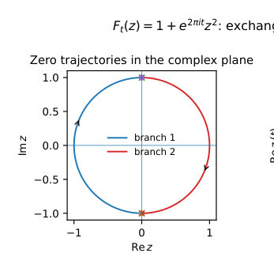
<figcaption class="paper-figure-caption"><b>Fig 1.</b> Figure 1: Two-strand stellar braid generated by the binomial family (93). The left panel follows the two stellar zeros in the complex plane as the phase of the finite-Fock state is wound once; the right panel shows a braid projection using the real parts of the transported zeros. The figure illustrates the basic mechanism of the paper: a loop of non-Gaussian states of fixed stellar degree can exchange its stellar zeros and thereby define an element of B2.</figcaption>
</figure>
<figure class="paper-figure-card">
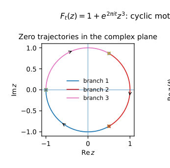
<figcaption class="paper-figure-caption"><b>Fig 2.</b> Figure 2: Cyclic three-strand stellar braid for the cubic binomial loop (97). The zeros form an equilateral configuration and return to the same unordered divisor after a cyclic relabeling. This is the simplest visual example in which the cubic finite-Fock family realizes a nontrivial braid in B3.</figcaption>
</figure>
<figure class="paper-figure-card">
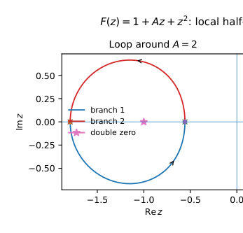
<figcaption class="paper-figure-caption"><b>Fig 3.</b> Figure 3: Quadratic discriminant loop and local half-twist. For FA(z) = 1 + Az + z2, the fixed-B slice has discriminant points A = ±2. A small loop around A = 2 produces a collision-avoiding exchange of the two stellar zeros near the double root. This is the local model behind the statement that a smooth point of the stellar discriminant produces an elementary half-twist.</figcaption>
</figure>
<figure class="paper-figure-card">
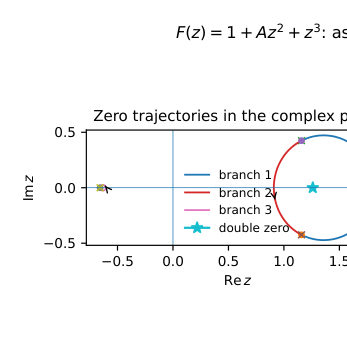
<figcaption class="paper-figure-caption"><b>Fig 4.</b> Figure 4: Asymmetric cubic half-twist for the trinomial slice FA(z) = 1+Az2 +z3. The loop in the A-plane surrounds one point of the discriminant A3 = −27/4. Along this loop two stellar zeros perform a local exchange while the third remains separated. The example shows that sparse finite-Fock slices realize local braid generators without relying on the high symmetry of the cubic binomial family.</figcaption>
</figure>
</div>

<p><strong>Summary.</strong> The paper introduces stellar braid monodromy as a powerful topological invariant for characterizing non-Gaussian bosonic photonic states. It shows that the space of these regular states has a fundamental group isomorphic to the Artin braid group. This invariant captures how the state's defining zeros move along a preparation path, offering a comprehensive tool complementary to existing quantum diagnostics.</p>
<p><strong>Why it may be interesting.</strong> This work provides a deep geometric and topological tool (braid theory) to classify quantum states beyond simple measures like entanglement or negativity. For AMO/Quantum Optics, understanding how state properties change topologically under parameter variation is crucial for designing robust quantum protocols.</p>
<details>
<summary>Detailed structure</summary>
<p><strong>Main problem.</strong> To develop a topological invariant, called stellar braid monodromy, that characterizes regular parameterized families of non-Gaussian bosonic states.</p>
<p><strong>Main result.</strong> The regular stratum of the finite-rank state space is biholomorphic to the unordered configuration space $ ext{Conf}_r(\mathbb{C})/\mathfrak{S}_r$, meaning its fundamental group is the Artin braid group $B_r$. The resulting monodromy provides a robust, path-dependent invariant complementing scalar measures of non-Gaussianity.</p>
<p><strong>Method.</strong> The authors map the state space onto the configuration space of the stellar zeros by analyzing the motion of these zeros under continuous deformations (parameter loops). This movement is captured by calculating the braid monodromy homomorphism into the Artin braid group.</p>
<p><strong>Model / system.</strong> The system involves single-mode bosonic Fock states, whose non-Gaussian structure is encoded by a finite stellar divisor in the Bargmann representation. The analysis is restricted to the regular stratum of these finite-rank states within the truncated Fock subspace $\mathcal{H}_r$.</p>
<p><strong>Key observables.</strong> Braid monodromy (the full braid invariant), Stellar Rank, Wigner negativity, and the coefficients $(b_0, \dots, b_{r-1})$ defining the state in the finite-Fock chart.</p>
<p><strong>Important parameters / regimes.</strong> The rank $r$ of the non-Gaussian state; the parameters defining the preparation loop or parameterized family.</p>
<p><strong>Assumptions / limitations.</strong> The analysis is strictly limited to the 'regular' stratum where stellar zeros do not collide and no zero vanishes at infinity. The method does not directly address mixed states or multimode dynamics.</p>
<p><strong>Paper structure.</strong> The paper establishes the mathematical framework by relating the state space to configuration spaces, deriving that the fundamental group is $B_r$. It then extends this concept to define the braid monodromy invariant for parameterized families of states, comparing it to existing diagnostics.</p>
</details>
<details>
<summary>Abstract</summary>
<p>Finite-rank non-Gaussian bosonic states admit a holomorphic description in the Bargmann representation: after a zero-free Gaussian factor is separated off, their non-Gaussian structure is encoded by a finite stellar divisor. This article introduces a topological refinement of stellar rank for regular parameterized families of such states. Rather than only counting the zeros of the stellar divisor, we follow their motion under deformations of the state and record the associated braid monodromy. In the finite-Fock chart, a regular degree-r stellar state is represented by a monic polynomial with r simple zeros. The regular stratum is biholomorphic to the unordered configuration space of r points in the complex plane, and its fundamental group is the Artin braid group on r strands. Thus braid monodromy is an intrinsic invariant of loops in the regular finite-rank stellar state space. We then extend the construction to admissible finite stellar divisors of the form E_tau,mu(z) P(z); the zero-free Gaussian parameters form a contractible fiber over the same configuration-space base. Experimentally motivated finite-Fock families, especially the cubic subspace spanned by the first four Fock states, provide concrete laboratories, while trinomial slices yield explicit discriminants and local half-twists. The resulting invariant is post-tomographic and applies to preparation loops and parameterized families; it complements Wigner negativity, stellar rank, approximate stellar rank, and other scalar diagnostics of non-Gaussianity.</p>
</details>
<p><sub><a href="#top">↑ back to top</a></sub></p>

<p><a id="paper-2607.05094"></a></p>
<h3 id="brownian-motion-in-orthogonal-and-symplectic-groups"><a href="http://arxiv.org/abs/2607.05094v1">Brownian Motion in Orthogonal and Symplectic Groups</a></h3>
<p><strong>Authors:</strong> Zhiyang Tan, Piet W. Brouwer<br>
<strong>Type:</strong> theory · <strong>Category:</strong> other · <strong>PDF:</strong> <a href="https://arxiv.org/pdf/2607.05094v1">https://arxiv.org/pdf/2607.05094v1</a><br>
<strong>Analysis basis:</strong> full PDF text, analyzed in chunks
<strong>Topic relevance:</strong> <code>Keldysh / 2PI / non-Gaussian methods</code> <strong>2/5</strong> · <code>methods for driven-dissipative</code> <strong>1/5</strong> · <code>non-equilibrium dynamics</code> <strong>1/5</strong></p>
<div class="figure-strip-hint">↔ Scroll figures horizontally</div>
<div class="paper-figures-scroll">
<figure class="paper-figure-card">
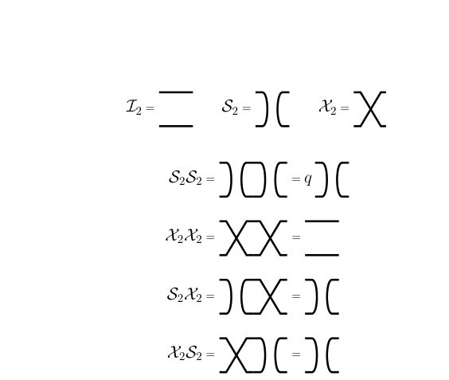
<figcaption class="paper-figure-caption"><b>Fig 1.</b> FIG. 1: Diagrammatic representation of the tensors I2, S2, and X2 (top) and their multiplication rules (bottom) in the orthogonal case.</figcaption>
</figure>
<figure class="paper-figure-card">

<figcaption class="paper-figure-caption"><b>Fig 2.</b> FIG. 2: Diagrammatic representation of the tensors I2, S2, and X2 and their multiplication rules for the symplectic (oriented) case. Note the introduction of a negative sign in the product of S2 and X2, which follows from reversing the orientation of the solid line on the left end of the diagram.</figcaption>
</figure>
<figure class="paper-figure-card">
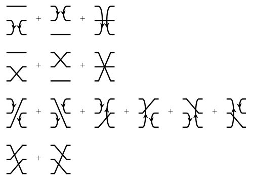
<figcaption class="paper-figure-caption"><b>Fig 3.</b> FIG. 3: Diagrammatic representations of the tensors I3, S3, X3, S′ 3, and X ′ 3 in the symplectic case. Diagrammatic representations for the orthogonal case are obtained by omitting the orientations indicated by the arrows (compare Figs. 1 and 2).</figcaption>
</figure>
<figure class="paper-figure-card">
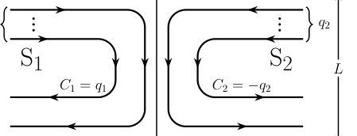
<figcaption class="paper-figure-caption"><b>Fig 4.</b> FIG. 4: Junction between topological superconductors S1 and S2 with Chern numbers C1 &gt; 0 and C2 &lt; 0. The number of chi- ral Majorana edge modes at the superconductor-vacuum boundary is qj = |Cj|, j = 1, 2. At the interface between the two superconduc- tors, there are q = q1 + q2 co-propagating chiral Majorana modes.</figcaption>
</figure>
<figure class="paper-figure-card">
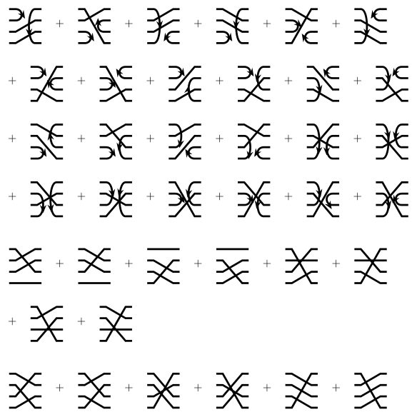
<figcaption class="paper-figure-caption"><b>Fig 5.</b> FIG. 5: Diagrammatic representations of I4, S4, X4, ˜S4, ˜ X4, ˜S′ 4, T4, S′ 4, T ′ 4, S′′ 4 , X ′ 4, and X ′′ 4 for the symplectic case. Diagrammatic representations for the orthogonal case are obtained by omitting the orientations on the arcs connecting indices on the same side of each diagram.</figcaption>
</figure>
</div>

<p><strong>Summary.</strong> This paper develops a unified diagrammatic framework to calculate the time evolution of moment operators for Brownian motion on orthogonal and symplectic Lie groups. By extending techniques from unitary ensembles, it derives explicit formulas for these moments up to fourth order. This work is vital for analyzing quantum chaos, thermalization, and transport in systems with particle-hole symmetry.</p>
<p><strong>Why it may be interesting.</strong> This work provides powerful mathematical tools derived from random matrix theory that describe quantum dynamics in systems possessing specific symmetries (orthogonal/symplectic), which is crucial for understanding transport and chaos.</p>
<details>
<summary>Detailed structure</summary>
<p><strong>Main problem.</strong> The paper develops a unified diagrammatic framework to characterize Brownian ensembles for orthogonal and symplectic random matrices.</p>
<p><strong>Main result.</strong> Explicit, complex formulas are derived for the time evolution of moment operators ($U_k(t)$) and their corresponding trace moments ($   ext{Tr}(V^k)$) up to fourth order.</p>
<p><strong>Method.</strong> The calculation uses diagrammatic techniques based on extending methods from unitary ensembles to orthogonal and symplectic cases, involving tensor algebra and matrix exponentiation.</p>
<p><strong>Model / system.</strong> The study concerns Brownian motion on the orthogonal $O(q)$ and symplectic $   ext{Sp}(q)$ groups. The dynamics are governed by moment operators derived from random matrices constrained by an antiunitary involution Z.</p>
<p><strong>Key observables.</strong> Moment operators ($U_k(t)$), trace moments ($   ext{Tr}(V^k)$), spectral form factor, and frame potential.</p>
<p><strong>Important parameters / regimes.</strong> The dimension parameter $q$, the time variable $t$, and the order of the moment $k$ (up to 4).</p>
<p><strong>Assumptions / limitations.</strong> The method relies on treating the problem using an antiunitary involution Z to unify the orthogonal and symplectic cases, and involves advanced tensor algebra related to the Brauer algebra.</p>
<p><strong>Figures summary.</strong> Figure 1 shows diagrammatic representations and multiplication rules for basis tensors in the orthogonal case; Figure 2 does the same for the symplectic case.</p>
<p><strong>Paper structure.</strong> The paper builds systematically by calculating moment operators $U_k(t)$ and trace moments recursively, first establishing the general framework (k=1, 2) and then providing explicit, highly complex formulas for higher orders (k=3, k=4).</p>
</details>
<details>
<summary>Abstract</summary>
<p>Matrix Brownian motion provides a powerful framework for studying crossover ensembles in quantum chaos and quantum transport, as well as thermalization and information scrambling in many-body dynamics. Here, we develop a unified diagrammatic framework to characterize Brownian ensembles for orthogonal and symplectic random matrices, which describe systems with particle-hole symmetry. We compute polynomial averages up to fourth order and construct an orthogonally invariant interpolation for the disconnected $\mathrm{SO}^-(q)$ sector of the orthogonal group. We consider applications relating to the fields of quantum information, quantum chaos, and quantum transport.</p>
</details>
<p><sub><a href="#top">↑ back to top</a></sub></p>

<p><a id="paper-2607.04110"></a></p>
<h3 id="circuit-design-informed-adaptive-variational-quantum-algorithms"><a href="http://arxiv.org/abs/2607.04110v1">Circuit Design Informed Adaptive Variational Quantum Algorithms</a></h3>
<p><strong>Authors:</strong> Muhammad Umer, Dimitris G. Angelakis<br>
<strong>Type:</strong> theory · <strong>Category:</strong> quantum information and computing · <strong>PDF:</strong> <a href="https://arxiv.org/pdf/2607.04110v1">https://arxiv.org/pdf/2607.04110v1</a><br>
<strong>Analysis basis:</strong> full PDF text, analyzed in chunks
<strong>Topic relevance:</strong> <code>quantum measurements</code> <strong>2/5</strong> · <code>analog quantum simulation</code> <strong>1/5</strong> · <code>measurement-induced transitions</code> <strong>1/5</strong></p>
<div class="figure-strip-hint">↔ Scroll figures horizontally</div>
<div class="paper-figures-scroll">
<figure class="paper-figure-card">
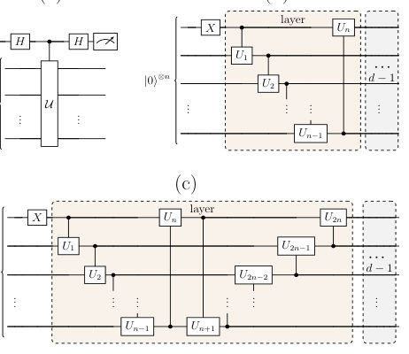
<figcaption class="paper-figure-caption"><b>Fig 1.</b> FIG. 1. (a) Hadamard test and (b, c) HT constrained ans¨atze. Here, n is the number of qubits in the register, d is the number of layers, and Ui = U(λi) is a controlled pa- rameterized gate. In the construction of ans¨atze, X gate at the beginning of circuits is controlled by the ancilla qubit, thereby establishing ancilla−register correlations. Panel (b) and (c) illustrate two distinct layouts.</figcaption>
</figure>
<figure class="paper-figure-card">

<figcaption class="paper-figure-caption"><b>Fig 2.</b> FIG. 3. Constraints embedded in the gate pool Opool. Here, (i)–(iii) highlight three classes of constraints, namely: (i) qubit connectivity constraint of the hardware platform, (ii) circuit design, i.e., the Hadamard test constraint, and (iii) non-redundancy constraints that prevent immediate re- selection of gates acting on the same qubit(s) by temporarily removing them from the candidate pool.</figcaption>
</figure>
<figure class="paper-figure-card">

<figcaption class="paper-figure-caption"><b>Fig 3.</b> FIG. 2. Scaling behavior of the gate pool Opool at the first iteration of adaptive frameworks. (a) and (b) correspond to the nearest-neighbor connectivity in a ring topology and all- to-all connectivity, respectively. Here, constraints (i) and (ii) are imposed by qubit connectivity and Hadamard test circuit design, respectively.</figcaption>
</figure>
<figure class="paper-figure-card">
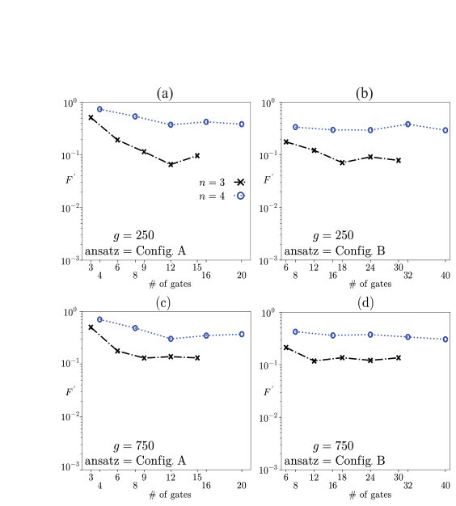
<figcaption class="paper-figure-caption"><b>Fig 4.</b> FIG. 4. Behavior of state infidelity as a function of number of gates in the layered HT ans¨atze. State infidelity quantifies the deviation of the variational state from the target classi- cal ground state. Results are shown for g = 250 in panels (a, b) and for g = 750 in panels (c, d). In addition, layer configuration A and B is adopted in panels (a, c) and (b, d), respectively.</figcaption>
</figure>
<figure class="paper-figure-card">

<figcaption class="paper-figure-caption"><b>Fig 5.</b> FIG. 6. Adaptive HT ans¨atze. Panels are organized accord- ing to both system size and nonlinear interaction strength. Here, n = 5 for panel (i), n = 4 in panels (ii−v), and n = 3 in panels (vi−viii). Additionally, g = 250, 500, 750, and 1000 correspond respectively to panels (i, ii, vi), (iii, vii), (iv, viii), and (v, viii).</figcaption>
</figure>
</div>

<p><strong>Summary.</strong> This paper proposes integrating circuit design considerations, specifically using Hadamard Test constraints, into adaptive variational quantum algorithms. By doing so, it significantly reduces the measurement overhead required to build expressive ansätze for solving problems like the nonlinear Schrödinger equation. This systematic approach enhances the practical feasibility of running complex quantum simulations on current NISQ hardware.</p>
<p><strong>Why it may be interesting.</strong> This work directly addresses practical limitations in quantum computation by providing algorithmic guidelines (circuit-aware ansatz construction) that improve resource scaling for simulating physical systems like those modeled by the NLSE.</p>
<details>
<summary>Detailed structure</summary>
<p><strong>Main problem.</strong> Developing resource-efficient variational quantum algorithms (VQAs) suitable for the Noisy Intermediate-Scale Quantum (NISQ) era.</p>
<p><strong>Main result.</strong> Incorporating circuit design constraints, such as those derived from the Hadamard Test architecture, can systematically reduce measurement overhead in adaptive VQA frameworks by 25% to 55%.</p>
<p><strong>Method.</strong> The authors employ an adaptive variational framework that iteratively constructs hardware-aware ansätze while enforcing structural constraints on the candidate gate pool.</p>
<p><strong>Model / system.</strong> The study applies these techniques to find the ground state of the nonlinear Schrödinger equation (NLSE), which is discretized using a finite-difference method.</p>
<p><strong>Key observables.</strong> State fidelity ($F' = 1 - |\langle\Psi_{	ext{target}}|\Psi_{	ext{var}}
angle|^2$) and measurement overhead/required measurement resources.</p>
<p><strong>Important parameters / regimes.</strong> Nonlinearity strength ($g$), system size ($n$), and the depth of the variational ansatz layers.</p>
<p><strong>Assumptions / limitations.</strong> The analysis assumes that incorporating constraints from hardware connectivity, HT structure, and non-redundancy is sufficient to guide the construction of expressive ansätze.</p>
<p><strong>Figures summary.</strong> Figures illustrate the Hadamard test circuit, the scaling reduction of the gate pool size due to constraints, and comparisons showing adaptive ansätze achieving higher state fidelities than simple layered ones for the NLSE ground state.</p>
<p><strong>Paper structure.</strong> The paper first establishes the need for resource efficiency in NISQ devices. It then details the use of adaptive VQA frameworks applied to the NLSE ground state problem. The core contribution is demonstrating how circuit design constraints prune the gate pool, leading to significant overhead reduction while maintaining high fidelity compared to unconstrained or purely layered approaches.</p>
</details>
<details>
<summary>Abstract</summary>
<p>Resource-efficient computation is of central importance in the noisy intermediate-scale quantum (NISQ) era, where decoherence, gate errors, and restricted qubit connectivity severely limit the reliable execution of quantum algorithms. In this work, we demonstrate that incorporating circuit design considerations is crucial for developing resource-efficient variational quantum algorithms. By focusing on the Hadamard test circuit architecture, hardware-aware qubit connectivity, and problem-specific adaptive framework, we analyze how circuit design constraints can systematically reduce the measurement overhead associated with repeated evaluations of the candidate gate pool in adaptive algorithms. Specifically, we demonstrate reductions in the required measurement resources ranging from at least 25% to as high as 50% - 55%. To assess the effectiveness of our approach, we investigate the ground state problem of the nonlinear Schrödinger equation. Overall, our work contributes to resource-friendly strategies for quantum computation and underscores that algorithmic frameworks should systematically integrate circuit design constraints with hardware-aware and problem-specific structures to enhance the practical feasibility of quantum devices in the NISQ era.</p>
</details>
<p><sub><a href="#top">↑ back to top</a></sub></p>

<p><a id="paper-2607.05143"></a></p>
<h3 id="effective-field-theory-of-noncritical-m-theory-from-bosonization"><a href="http://arxiv.org/abs/2607.05143v1">Effective Field Theory of Noncritical M-theory from Bosonization</a></h3>
<p><strong>Authors:</strong> Patrick Jefferson, Tokiro Numasawa<br>
<strong>Type:</strong> theory · <strong>Category:</strong> strongly correlated electrons · <strong>PDF:</strong> <a href="https://arxiv.org/pdf/2607.05143v1">https://arxiv.org/pdf/2607.05143v1</a><br>
<strong>Analysis basis:</strong> full PDF text, analyzed in chunks
<strong>Topic relevance:</strong> <code>analog quantum simulation</code> <strong>2/5</strong> · <code>Keldysh / 2PI / non-Gaussian methods</code> <strong>1/5</strong> · <code>Kondo &amp; dissipative impurity</code> <strong>1/5</strong></p>
<div class="figure-strip-hint">↔ Scroll figures horizontally</div>
<div class="paper-figures-scroll">
<figure class="paper-figure-card">
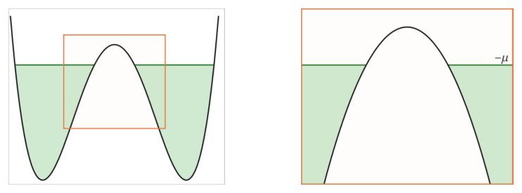
<figcaption class="paper-figure-caption"><b>Fig 1.</b> Figure 1: The double scaling limit (2.2) effectively “zooms in” on the quadratic maximum of the potential in (2.1), in the process scaling away other non-universal features while holding fixed the renormalized Fermi level −µ. The figure on the right depicts the inverted harmonic oscillator potential, which is the universal potential that remains after taking the double-scaling limit. In both figures, the shaded region is the filled Fermi sea, with its boundary corresponding to the static Fermi surface (2.4).</figcaption>
</figure>
<figure class="paper-figure-card">

<figcaption class="paper-figure-caption"><b>Fig 2.</b> Figure 2: The shaded region is the filled c = 1 string Fermi sea. We can label the state of the Fermi sea in terms of the upper and lower surfaces p±(t, λ), which are indicated for a definite value of λ as an illustration. This is essentially a duplicate of Figure 25 in [20].</figcaption>
</figure>
<figure class="paper-figure-card">
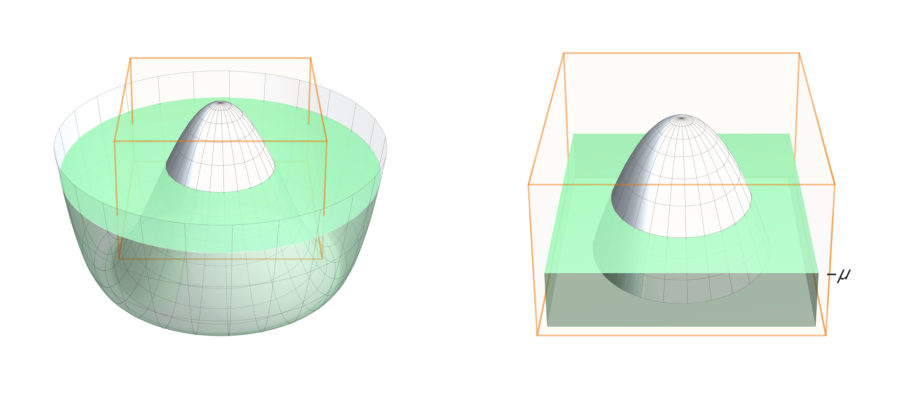
<figcaption class="paper-figure-caption"><b>Fig 3.</b> Figure 3: The double scaling limit of noncritical M-theory is analogous to the double scaling limit of the c = 1 matrix model (compare to Figure 1). The Fermi sea is again filled up to a Fermi level −µ, but in this case the single particle dispersion is given by a two-dimensional rotationally-symmetric inverted harmonic oscillator potential. In the above images, the shaded region is the filled Fermi sea, with the image on the right illustrating the universal potential that survives the double-scaling limit.</figcaption>
</figure>
<figure class="paper-figure-card">
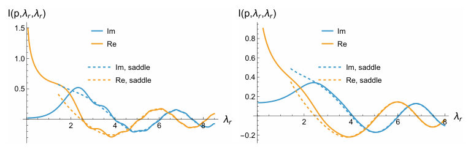
<figcaption class="paper-figure-caption"><b>Fig 4.</b> Figure 5: Comparison between the exact resolvent and its saddle-point approximation. The left panel shows the case p = 0.001, while the right panel corresponds to p = 1. The parameters are chosen as θ = π/20 and µ = 1. The qualitative behavior remains unchanged for sufficiently small |θ| and arbitrary µ.</figcaption>
</figure>
<figure class="paper-figure-card">

<figcaption class="paper-figure-caption"><b>Fig 5.</b> Figure 6: Representative plots of the exact density one-point function. The left panel shows the density ρ, while the right panel shows its derivative with respect to the Fermi energy, −∂ρ/∂µ.</figcaption>
</figure>
</div>

<p><strong>Summary.</strong> This theoretical paper develops an effective field theory for noncritical M-theory by applying bosonization techniques to its microscopic description as a free fermion system. The authors validate this derived bosonic action by calculating correlation functions and showing they match predictions from the exact fermionic model in appropriate limits, advancing the understanding of spacetime gravity connections.</p>
<p><strong>Why it may be interesting.</strong> While focused on string theory, the core methodology—bosonizing excitations around a Fermi surface (the coadjoint orbit approach)—is directly applicable to strongly correlated electron systems where low-energy physics is governed by collective modes near the Fermi level.</p>
<details>
<summary>Detailed structure</summary>
<p><strong>Main problem.</strong> The primary goal is constructing an effective spacetime gravity description for noncritical M-theory by relating it to its known microscopic definition as a free fermion system.</p>
<p><strong>Main result.</strong> The authors derive an effective field theory using bosonization that successfully reproduces established results in lower dimensions (like the Das-Jevicki theory) and matches correlation functions calculated from the exact Fermi liquid description in the semiclassical limit.</p>
<p><strong>Method.</strong> They extend the coadjoint orbit approach to bosonization, systematically comparing the resulting bosonic effective action with predictions derived from the underlying integrable structure of noncritical M-theory.</p>
<p><strong>Model / system.</strong> The model is Noncritical M-theory, which is treated as a double-scaled $(2+1)$-dimensional nonrelativistic Fermi liquid. This system serves as a lower-dimensional analog for understanding string theory vacua and quantum gravity.</p>
<p><strong>Key observables.</strong> Fermion density correlation functions (one-, two-, and three-point functions) are used to test the consistency between the effective field theory and the exact fermionic description.</p>
<p><strong>Important parameters / regimes.</strong> The analysis focuses on different dimensions ($1+1$d and $2+1$d), the semiclassical limit, and the underlying parameters defining the Fermi surface/potential.</p>
<p><strong>Assumptions / limitations.</strong> Key steps involve applying approximations like the stationary phase approximation to calculate resolvents and assuming suitability of gauge choices for dimensional reduction.</p>
<p><strong>Figures summary.</strong> Figure 1 illustrates the double scaling limit zooming in on the quadratic maximum potential, showing the filled Fermi sea boundary corresponding to the static Fermi surface. Other figures compare exact resolvents with saddle point approximations.</p>
<p><strong>Paper structure.</strong> The paper systematically applies the coadjoint-orbit method to derive an effective bosonic action for bosonization of the Fermi surface. It then rigorously tests this action by calculating and comparing its correlation functions against known results from the exact fermionic theory, culminating in discussions about gravitational interpretations.</p>
</details>
<details>
<summary>Abstract</summary>
<p>We extend the coadjoint orbit approach to bosonization systematized by Delacretaz-Du-Mehta-Son to double-scaled non-relativistic Fermi liquids with central inverted harmonic oscillator potential. In 1+1d, this reproduces the Das-Jevicki collective field theory describing quasiparticle excitations of the $c=1$ matrix model. In 2+1d, this yields an effective field theory for noncritical M-theory, namely the 2+1d Fermi liquid proposed by Hořava and Keeler as a unified framework for characterizing noncritical string vacua. With a suitable gauge choice this theory reduces to a continuous family of 1+1d chiral bosons resembling Das-Jevicki collective fields coupled by additional interactions. Utilizing the underlying integrability of noncritical M-theory, we compute select fermion density correlation functions order-by-order in perturbation theory, and provide evidence that they agree with their Fermi liquid counterparts in a suitable semiclassical limit. This represents a step toward an effective spacetime gravity description of noncritical M-theory, which we expect to shed light on both the landscape of 2d noncritical strings and 3d quantum gravity in general.</p>
</details>
<p><sub><a href="#top">↑ back to top</a></sub></p>

<p><a id="paper-2607.04252"></a></p>
<h3 id="universal-fluctuations-of-first-discoveries-in-competitive-exploration"><a href="http://arxiv.org/abs/2607.04252v1">Universal fluctuations of first discoveries in competitive exploration</a></h3>
<p><strong>Authors:</strong> Arthur Plaud, P. L. Krapivsky, S. Redner, Olivier Bénichou<br>
<strong>Type:</strong> theory · <strong>Category:</strong> statistical mechanics · <strong>PDF:</strong> <a href="https://arxiv.org/pdf/2607.04252v1">https://arxiv.org/pdf/2607.04252v1</a><br>
<strong>Analysis basis:</strong> full PDF text, analyzed in chunks
<strong>Topic relevance:</strong> <code>non-equilibrium universality</code> <strong>2/5</strong> · <code>driven-dissipative phase transition</code> <strong>1/5</strong> · <code>non-equilibrium dynamics</code> <strong>1/5</strong></p>
<div class="figure-strip-hint">↔ Scroll figures horizontally</div>
<div class="paper-figures-scroll">
<figure class="paper-figure-card">
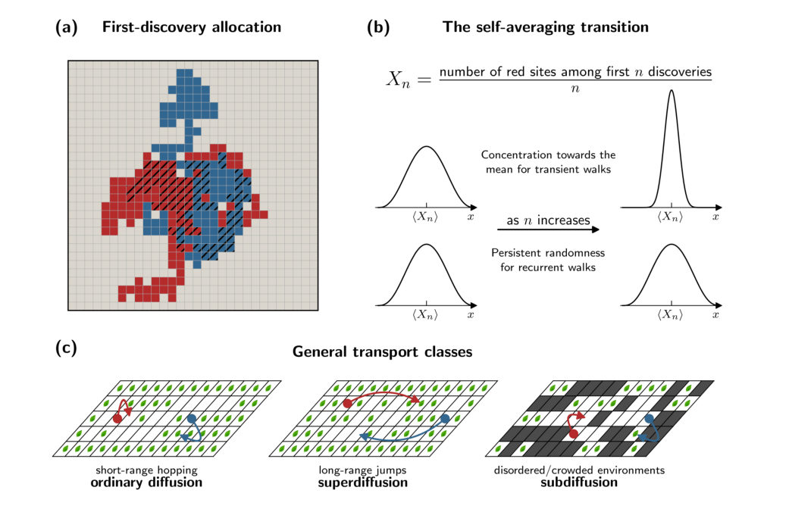
<figcaption class="paper-figure-caption"><b>Fig 1.</b> FIG. 1. Competitive exploration requires a missing observable. a, First-discovery allocation. Two identical searchers explore a landscape in which each site initially carries one unclaimed resource. Grey sites are undiscovered; coloured sites have been discovered and are labelled by the searcher that reached them first; hatched sites have been visited by both searchers. Classical observables measure collective coverage or geometric interference, but not which searcher secured each discovery. b, Self-averaging transition. We tag one searcher and set Ik = 1 if the k-th collective discovery is secured by this tagged searcher, and Ik = 0 otherwise. The discovery share Xn = n−1 Pn k=1 Ik has...</figcaption>
</figure>
<figure class="paper-figure-card">
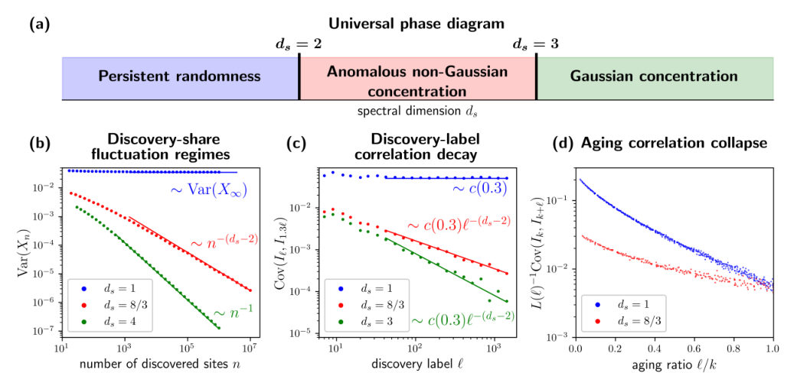
<figcaption class="paper-figure-caption"><b>Fig 2.</b> FIG. 2. First-discovery label correlations underlie the discovery-share fluctuation phase diagram. a, Discovery-share fluctuation regimes. The spectral dimension ds, defined by the on-site decay p0(t) ∼t−ds/2, separates persistent randomness (ds &lt; 2), anomalously slow non-Gaussian concentration (2 ≤ds &lt; 3), and Gaussian concentration (ds ≥3), with logarithmic corrections at ds = 3. b, Discovery-share variance. Simulations for two identical searchers on a one-dimensional lattice with a general symmetric jump law (simulation details given in the SI) confirm Eq. (4): non-zero limiting variance for ds &lt; 2, anomalous decay for 2 &lt; ds &lt; 3, and 1/n Gaussian decay for ds &gt; 3. c, Discovery-label...</figcaption>
</figure>
<figure class="paper-figure-card">
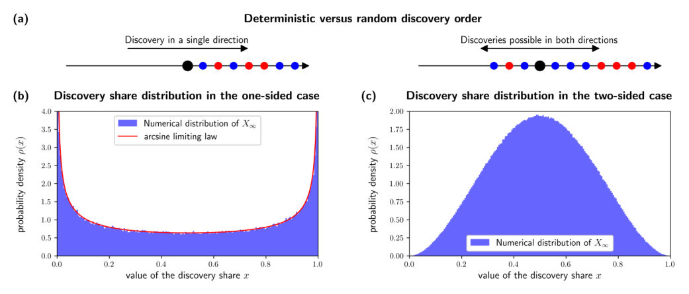
<figcaption class="paper-figure-caption"><b>Fig 3.</b> FIG. 3. Site-discovery order shapes broad recurrent fluctuations. In recurrent exploration, discovery-label correlations prevent self-averaging, but the limiting law also depends on the spatial order in which sites are discovered. a, Deterministic versus random site-discovery order. The black dot marks the starting point. Red and blue sites are first discovered by the two competitors, respectively. In the one-sided geometry, the first n collective discoveries are necessarily the sites 1, . . . , n, so the spatial order of discovery is deterministic. In the symmetric geometry, discoveries can occur on either side of the origin, and the left-right order of discovered sites is random. b,...</figcaption>
</figure>
<figure class="paper-figure-card">
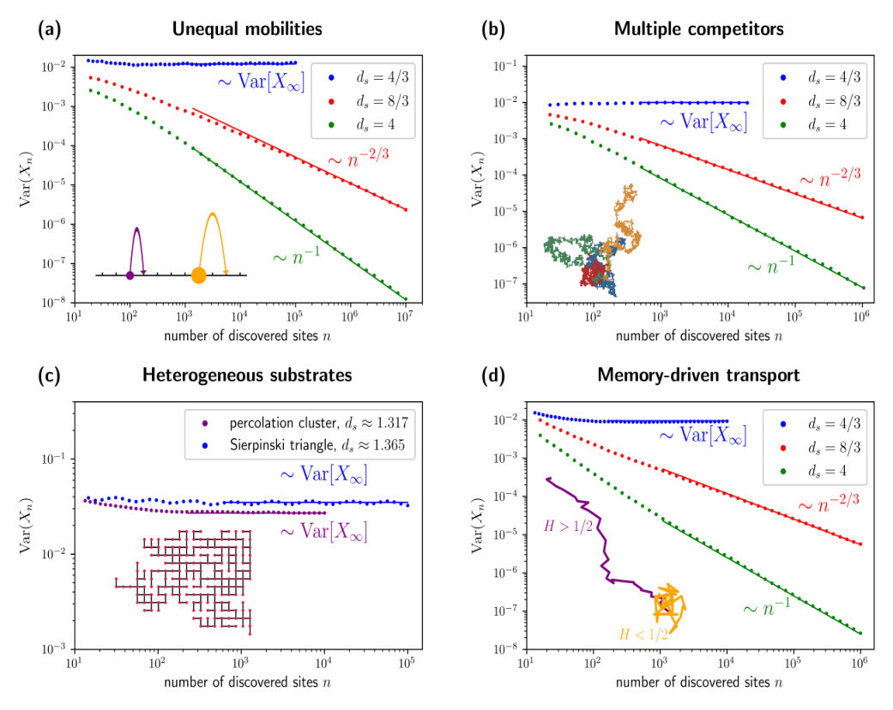
<figcaption class="paper-figure-caption"><b>Fig 4.</b> FIG. 4. Discovery-share fluctuation regimes persist beyond the minimal model. Numerical simulations of representative extensions show that the fluctuation structure predicted by the analytical framework is robust to changes in microscopic dynamics, geometry and competitive setting. The simulations use one-dimensional heavy-tailed jump processes in panels a and b, simple diffusion on fractal substrates in panel c, and fractional Brownian motion in panel d. Small schematics in the panels illustrate the corresponding extension. a, Unequal mobilities. When the two competitors have unequal mobilities, here implemented by different jump scales, the mean discovery share is shifted away from 1/2;...</figcaption>
</figure>
</div>

<p><strong>Summary.</strong> This work develops a general fluctuation theory for competitive exploration processes by analyzing the fraction of first discoveries secured by one searcher. The key finding links the persistence of early advantages to the spectral dimension ($d_s$) of the underlying random walk, establishing a critical threshold at $d_s=2$ that dictates whether fluctuations are persistent or self-averaging.</p>
<p><strong>Why it may be interesting.</strong> The concept of 'spectral dimension' controlling macroscopic fluctuation behavior is highly relevant to understanding anomalous transport in complex media, which has parallels in quantum many-body systems exhibiting fractal or disordered dynamics.</p>
<details>
<summary>Detailed structure</summary>
<p><strong>Main problem.</strong> The core problem is determining whether early competitive advantages, measured by the 'discovery share' ($X_n$), persist or are erased over long exploration histories in a setting where multiple searchers compete for resources.</p>
<p><strong>Main result.</strong> Self-averaging (convergence to $1/2$) occurs if and only if the spectral dimension $d_s$ of the underlying random walk is greater than or equal to 2, with specific power laws governing the variance decay in different regimes defined by $d_s$.</p>
<p><strong>Method.</strong> The analysis involves deriving asymptotic fluctuation laws for the discovery share using tools from probability theory, specifically analyzing two-point correlations and scaling functions.</p>
<p><strong>Model / system.</strong> The model is competitive exploration involving multiple searchers discovering sites on a lattice or space whose dynamics are characterized by the spectral dimension $d_s$. This framework is generalizable to various random walk types (e.g., Brownian motion, Lévy walks) and geometries.</p>
<p><strong>Key observables.</strong> Discovery share ($X_n$), asymptotic variance ($  ext{Var}(X_n)$), two-point label correlations $ ext{Cov}(I_k, I_{k+\ell})$.</p>
<p><strong>Important parameters / regimes.</strong> Spectral dimension ($d_s$): controls the fluctuation regime; $d_s < 2$ (persistent randomness) vs. $d_s \ge 2$ (self-averaging).</p>
<p><strong>Assumptions / limitations.</strong> The analysis assumes a general symmetric jump law for the searchers, allowing the results to be generalized across different geometries and memory effects.</p>
<p><strong>Figures summary.</strong> Figures illustrate the phase diagram based on $d_s$, showing variance decay tests confirming derived power laws, and demonstrate covariance collapse onto universal scaling functions for various random walk types.</p>
<p><strong>Paper structure.</strong> The paper establishes the diagnostic observable ($X_n$), links its fluctuation behavior to the spectral dimension ($d_s$) of the underlying diffusion process, derives asymptotic variance formulas across different $d_s$ regimes, and validates these results by testing multiple physical models (e.g., Lévy walks, unequal mobilities).</p>
</details>
<details>
<summary>Abstract</summary>
<p>Random exploration is usually quantified by how fast new space is found, from   the range of a single walker to the territory collectively covered by many   walkers. In competitive exploration, first arrival secures an exclusive resource, as when foragers compete for food items or agents capture distributed targets. It is then no longer enough to know which sites have been discovered: one must determine, for each discovered site, which searcher reached it first. We introduce the discovery   share $X_n$, the fraction of the first $n$ collective discoveries secured by   a tagged searcher. For two identical competitors, exchange symmetry fixes   $\langle X_n\rangle=1/2$, but the central question is whether this equal   split emerges in each long exploration history or only on average, \emph{i.e.} whether early   competitive advantages are erased or persist. Here we show that the answer is   controlled by the spectral dimension $d_s$, defined by the large-time decay of the probability that a single searcher is at   its starting point after $t$ steps, $p_0(t)\sim t^{-d_s/2}$.   Across ordinary diffusion, long-range superdiffusion and subdiffusion induced   by crowding or memory, $d_s$ separates persistent randomness in   recurrent exploration $(d_s<2)$, anomalously slow non-Gaussian concentration   for $2\le d_s<3$, and Gaussian concentration, logarithmically corrected at   $d_s=3$, for $d_s\ge3$. For $d_s\ge2$, we derive exact asymptotic   variances, including prefactors, and the discovery scale on which competitive   imbalances are erased. Two-point correlations of first-discovery labels identify the memory mechanism behind these regimes.   The same phase structure persists under changes in geometry, competitor   heterogeneity, number of competitors and memory, revealing a general fluctuation   theory of first-arrival inequalities.</p>
</details>
<p><sub><a href="#top">↑ back to top</a></sub></p>

<p><a id="paper-2607.04845"></a></p>
<h3 id="hamqasbench-a-hamiltonian-informed-diagnostic-benchmark-for-evaluating-quantum-architecture-search"><a href="http://arxiv.org/abs/2607.04845v1">HamQASBench: A Hamiltonian-Informed Diagnostic Benchmark for Evaluating Quantum Architecture Search</a></h3>
<p><strong>Authors:</strong> Jiayang Niu, Akib Karim, Yan Wang, Jie Li, Ke Deng, Azadeh Alavi, Muhammad Usman, Yongli Ren<br>
<strong>Type:</strong> theory · <strong>Category:</strong> quantum information and computing · <strong>PDF:</strong> <a href="https://arxiv.org/pdf/2607.04845v1">https://arxiv.org/pdf/2607.04845v1</a><br>
<strong>Analysis basis:</strong> full PDF text, analyzed in chunks
<strong>Topic relevance:</strong> <code>entanglement &amp; information structure</code> <strong>2/5</strong> · <code>analog quantum simulation</code> <strong>1/5</strong></p>
<div class="figure-strip-hint">↔ Scroll figures horizontally</div>
<div class="paper-figures-scroll">
<figure class="paper-figure-card">

<figcaption class="paper-figure-caption"><b>Fig 1.</b> Figure 1: Visual illustration of Hamiltonian structural fingerprints for various molecules.</figcaption>
</figure>
<figure class="paper-figure-card">
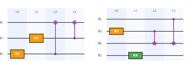
<figcaption class="paper-figure-caption"><b>Fig 2.</b> Figure 2: Critical-structure analysis. (a,b) Tier 1 circuits collapse to 2-gate minimal forms. (c,d) Tier 2 yields two structurally distinct circuits targeting orthogonal degenerate eigenstates of CH2.</figcaption>
</figure>
</div>

<p><strong>Summary.</strong> The paper introduces HamQASBench, a novel benchmark that evaluates Quantum Architecture Search methods by analyzing the underlying Hamiltonian structure rather than just the final energy value. By deriving fingerprints from Pauli operators and entanglement, it categorizes molecular problems into five distinct structural tiers. This allows researchers to diagnose specific failures in QAS algorithms, such as over-parameterization or representation bottlenecks.</p>
<p><strong>Why it may be interesting.</strong> This work provides a rigorous framework for testing the fundamental capabilities of quantum machine learning algorithms (QAS) in simulating chemistry, moving the field past simple 'energy matching' to structural validation.</p>
<details>
<summary>Detailed structure</summary>
<p><strong>Main problem.</strong> To develop a diagnostic benchmark for Quantum Architecture Search (QAS) that evaluates circuit design beyond simple energy accuracy by diagnosing underlying structural failures.</p>
<p><strong>Main result.</strong> The proposed HamQASBench successfully reveals five distinct failure modes in QAS methods, including over-parameterization and representation bottlenecks, which are invisible to conventional energy metrics.</p>
<p><strong>Method.</strong> The authors introduce a Hamiltonian-informed benchmark that uses fingerprints derived from Pauli operator bases, computational basis representations, and entanglement structure to categorize molecular Hamiltonians into structural tiers. They complement this with a critical-structure extraction procedure using gate ablation.</p>
<p><strong>Model / system.</strong> The study focuses on simulating the ground-state energy of small molecules (e.g., H2, BeH2) governed by their qubit Hamiltonian ($H$), which is analyzed across five structural tiers based on its mathematical properties.</p>
<p><strong>Key observables.</strong> Per-qubit von Neumann entropy, pairwise state fidelity, redundancy ratio ($
ho$), Mean Absolute Entropy Difference (MAES), and success rates at chemical accuracy.</p>
<p><strong>Important parameters / regimes.</strong> The benchmark defines five structural tiers: Minimalism, Degeneracy, Strong Correlation, Topology Constraints, and Scalability/Growth. The analysis uses an error tolerance budget ($\epsilon_{	ext{allow}}$).</p>
<p><strong>Assumptions / limitations.</strong> It is assumed that the required circuit complexity can be isolated by pruning redundant gates while maintaining energy performance, allowing structural comparison against theoretical fingerprints.</p>
<p><strong>Figures summary.</strong> Figures illustrate the fingerprinting process for small molecules (H2, H3), and tables summarize QAS results across the five diagnostic tiers and scaling ladders.</p>
<p><strong>Paper structure.</strong> The paper first critiques existing benchmarks based only on molecular identity. It then details HamQASBench, defining structural fingerprints from three Hamiltonian views to create 5 structural tiers. The core methodology involves a post-hoc critical-structure extraction layer that moves beyond energy evaluation by analyzing entanglement and gate necessity.</p>
</details>
<details>
<summary>Abstract</summary>
<p>Quantum Architecture Search (QAS) automates the design of parameterized quantum circuits for variational quantum algorithms, yet existing benchmarks organize instances by molecular identity or qubit count -- criteria agnostic to Hamiltonian structure -- and rely solely on energy accuracy, which cannot detect structural failures such as over-parameterization on near-product ground states. We introduce HamQASBench, a Hamiltonian-informed diagnostic benchmark organizing 11 molecules into five structural tiers via fingerprints derived from the Pauli operator basis, computational basis representation, and ground-state entanglement. A post-hoc critical-structure extraction procedure identifies minimal circuits consistent with each tier's requirements, complementing energy-based evaluation with per-qubit entanglement analysis and pairwise state fidelity. Benchmarking five QAS methods across four paradigms reveals failure modes invisible to conventional metrics: over-parameterization in the minimalism regime, eigenstate commitment under degeneracy, a representation bottleneck in strongly correlated systems, topology-induced routing failure, and circuit search space growth as a scalability bottleneck.</p>
</details>
<p><sub><a href="#top">↑ back to top</a></sub></p>

<p><a id="paper-2607.04082"></a></p>
<h3 id="a-cross-platform-analysis-of-high-performance-quantum-error-correction-codes"><a href="http://arxiv.org/abs/2607.04082v1">A Cross-Platform Analysis of High-Performance Quantum Error Correction Codes</a></h3>
<p><strong>Authors:</strong> Bryan Pan, Yufeng Xin<br>
<strong>Type:</strong> theory · <strong>Category:</strong> quantum information and computing · <strong>PDF:</strong> <a href="https://arxiv.org/pdf/2607.04082v1">https://arxiv.org/pdf/2607.04082v1</a><br>
<strong>Analysis basis:</strong> full PDF text, analyzed in chunks
<strong>Topic relevance:</strong> <code>QC/QI experiment</code> <strong>2/5</strong></p>
<div class="figure-strip-hint">↔ Scroll figures horizontally</div>
<div class="paper-figures-scroll">
<figure class="paper-figure-card">

<figcaption class="paper-figure-caption"><b>Fig 1.</b> Fig. 1: Logical error estimates per round vs. two-qubit error rate for different QEC codes</figcaption>
</figure>
<figure class="paper-figure-card">
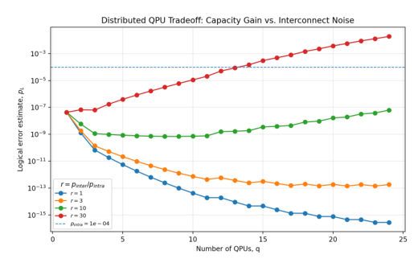
<figcaption class="paper-figure-caption"><b>Fig 2.</b> Fig. 2: Distributed-QPU logical error estimate as a function of QPU count. Each QPU assumed to support 200 physical qubits, nphys ≈ 2d2, N2Q ≈11d2, and Ninter = 4d(q −1).</figcaption>
</figure>
<figure class="paper-figure-card">

<figcaption class="paper-figure-caption"><b>Fig 3.</b> Figure 2 shows the resulting logical error estimates as a function of the number of QPUs for different interconnect noise ratios defined as</figcaption>
</figure>
<figure class="paper-figure-card">
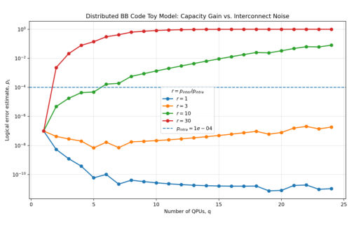
<figcaption class="paper-figure-caption"><b>Fig 4.</b> Fig. 3: Distributed-QPU BB logical error estimate as a function of QPU count. The model uses pintra = 10−4, N BB 2Q ≈18d2 and nBB phys ≈ d2 with λ = 0.25.</figcaption>
</figure>
<figure class="paper-figure-card">

<figcaption class="paper-figure-caption"><b>Fig 5.</b> Fig. 4: Sensitivity of the distributed BB analytical model to the nonlocal embedding factor λ for fixed pintra = 10−4 and r = 10.</figcaption>
</figure>
</div>

<p><strong>Summary.</strong> This paper introduces a unified analytical framework to estimate logical error rates for advanced Quantum Error Correction codes. By modeling contributions from code structure and gate overhead, it allows researchers to compare performance across diverse physical platforms like superconducting circuits and trapped ions. The work helps identify optimal design regions for building large-scale, fault-tolerant quantum computers.</p>
<p><strong>Why it may be interesting.</strong> It provides quantitative tools for comparing the resource overheads of different fault-tolerance schemes on realistic hardware constraints, which is crucial for designing next-generation quantum processors.</p>
<details>
<summary>Detailed structure</summary>
<p><strong>Main problem.</strong> Developing scalable quantum computers is hindered by physical noise and limited qubit counts, necessitating efficient Quantum Error Correction (QEC).</p>
<p><strong>Main result.</strong> The authors present a unified analytical framework to estimate logical error rates for various advanced QEC codes across different hardware platforms.</p>
<p><strong>Method.</strong> They use an analytical framework that models logical failure based on the accumulation of physical errors from code structure and two-qubit gate overheads.</p>
<p><strong>Model / system.</strong> The analysis considers multiple leading hardware platforms (superconducting, trapped-ion, neutral atoms) and advanced codes like topological, qLDPC, and Floquet codes. The framework separates intra-QPU and inter-QPU error sources for distributed systems.</p>
<p><strong>Key observables.</strong> Logical error rates ($p_L$), code parameters ($[[n, k, d]]$), and the identification of dominant error contributors (e.g., routing overhead).</p>
<p><strong>Important parameters / regimes.</strong> Physical error rate ($p_{loc}$), effective number of fault locations ($N_{loc}$), circuit volume, and connectivity constraints.</p>
<p><strong>Assumptions / limitations.</strong> The framework simplifies complex simulations by focusing on key circuit-level parameters; it assumes certain noise models (e.g., depolarizing) and may neglect correlated errors or full compilation overheads.</p>
<p><strong>Figures summary.</strong> Not specified in the notes, but the paper analyzes various code families and their performance metrics across different hardware architectures.</p>
<p><strong>Paper structure.</strong> The paper establishes the problem of scalability via noise, introduces a unified analytical framework to estimate $p_L$, details how platform connectivity affects error accumulation ($N_{loc}, p_{loc}$), and applies this model to compare various QEC codes (Topological, qLDPC, etc.).</p>
</details>
<details>
<summary>Abstract</summary>
<p>The theory of quantum error correction was established decades ago. Yet the limitation of the quantum computing platforms in terms of noise level and available physical qubit count persists, which greatly hinders the development of scalable quantum computing systems. In this paper, we present analytical estimates of logical error rates of advanced QEC codes across leading hardware platforms and distributed quantum computing systems using a simple but unified framework. The analysis captures two dominant contributors to logical error: code structure and two-qubit gate overhead. The framework provides a fast estimate of logical error rates and identification of dominating factors in different hardware platforms, such as circuit volume, routing overhead, inter-QPU operations, or asymmetric noise protection. We show that several qualitative trends observed in larger-scale simulations can be reproduced and interpreted analytically within this framework. We further demonstrate that the framework can be used to find the sweet spot design region of distributed QEC, which is critical for the design of distributed quantum computing systems.</p>
</details>
<p><sub><a href="#top">↑ back to top</a></sub></p>

<p><a id="paper-2607.05294"></a></p>
<h3 id="polynomial-initial-state-jumps-and-christoffel-transforms-in-krylov-complexity"><a href="http://arxiv.org/abs/2607.05294v1">Polynomial Initial-State Jumps and Christoffel Transforms in Krylov Complexity</a></h3>
<p><strong>Authors:</strong> Abhishek Chowdhury, Ajit Prasad Mahapatra<br>
<strong>Type:</strong> theory · <strong>Category:</strong> other · <strong>PDF:</strong> <a href="https://arxiv.org/pdf/2607.05294v1">https://arxiv.org/pdf/2607.05294v1</a><br>
<strong>Analysis basis:</strong> full PDF text, analyzed in chunks
<strong>Topic relevance:</strong> <code>Keldysh / 2PI / non-Gaussian methods</code> <strong>1/5</strong> · <code>correlated / nonlocal dissipation</code> <strong>1/5</strong> · <code>driven-dissipative phase transition</code> <strong>1/5</strong> · <code>entanglement &amp; information structure</code> <strong>1/5</strong> · <code>methods for driven-dissipative</code> <strong>1/5</strong></p>
<div class="figure-strip-hint">↔ Scroll figures horizontally</div>
<div class="paper-figures-scroll">
<figure class="paper-figure-card">
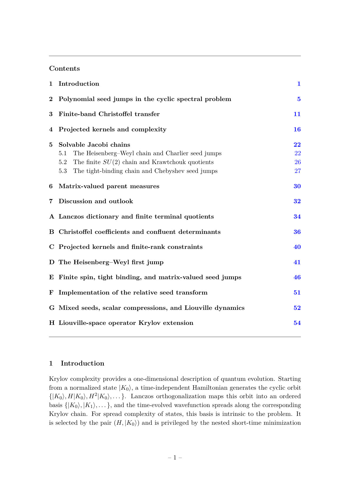
<figcaption class="paper-figure-caption"><b>Fig 1.</b> Low-resolution page preview, page 2</figcaption>
</figure>
<figure class="paper-figure-card">

<figcaption class="paper-figure-caption"><b>Fig 2.</b> Low-resolution page preview, page 3</figcaption>
</figure>
<figure class="paper-figure-card">

<figcaption class="paper-figure-caption"><b>Fig 3.</b> Low-resolution page preview, page 4</figcaption>
</figure>
<figure class="paper-figure-card">
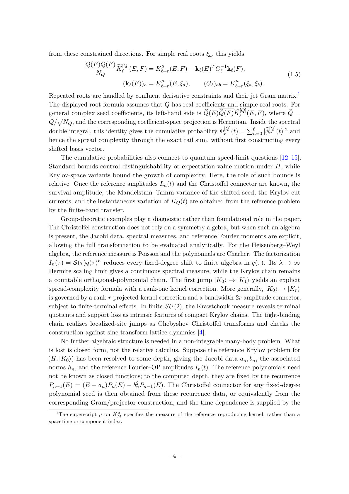
<figcaption class="paper-figure-caption"><b>Fig 4.</b> Low-resolution page preview, page 5</figcaption>
</figure>
<figure class="paper-figure-card">
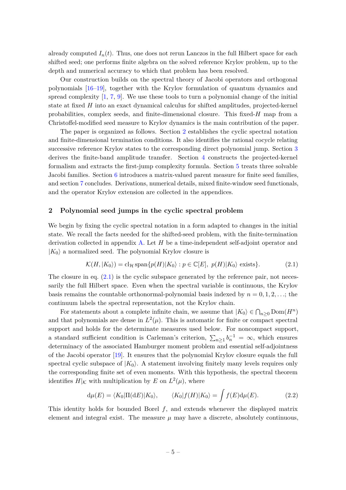
<figcaption class="paper-figure-caption"><b>Fig 5.</b> Low-resolution page preview, page 6</figcaption>
</figure>
</div>

<p><strong>Summary.</strong> This theoretical paper develops an exact mathematical framework to study how changing the initial state of a quantum system affects its Krylov complexity. By employing polynomial spectral filters and Christoffel transforms, it derives finite formulas that bypass computationally intensive full Hilbert space calculations. This provides a powerful 'relative calculus' for analyzing complex dynamics in various physical models.</p>
<p><strong>Why it may be interesting.</strong> It provides powerful algebraic tools to analyze spectral properties and complexity measures by decoupling the dependence on the initial state from the underlying Hamiltonian structure, which is crucial for understanding open quantum systems or time-dependent perturbations.</p>
<details>
<summary>Detailed structure</summary>
<p><strong>Main problem.</strong> The paper addresses the 'relative initial-state problem' for Krylov complexity, which quantifies how changing the initial state of a quantum system affects its spectral properties.</p>
<p><strong>Main result.</strong> It derives an exact relative calculus that allows generating polynomially related initial-state dynamics without needing to recompute the full Lanczos expansion in the original Hilbert space.</p>
<p><strong>Method.</strong> The core method involves using polynomial spectral filters, $Q(H)$, which transforms the spectral measure via a Christoffel transform into shifted Krylov amplitudes and projected Christoffel–Darboux kernels.</p>
<p><strong>Model / system.</strong> The analysis is applied to general quantum evolution governed by a Hamiltonian $H$ (or Liouvillian $\mathcal{L}$) acting on an initial state $|K_0
angle$. It tests the formalism on solvable Jacobi chains, including Heisenberg–Weyl/Charlier and SU(2)/Krawtchouk models.</p>
<p><strong>Key observables.</strong> Krylov complexity, spread complexity ($\Phi[Q]$), filtered spectral measure $    ext{d}
u_Q(E)$, and projected Christoffel–Darboux kernels.</p>
<p><strong>Important parameters / regimes.</strong> The polynomial filter $Q$, the initial state $|K_0
angle$, and temperature/time parameters in generalized extensions.</p>
<p><strong>Assumptions / limitations.</strong> The method is exact for polynomial seed jumps, though some interpretations are restricted to fixed low-degree spectral preparation regimes. Generalizations require careful handling of inner products (e.g., thermal vs. zero-temperature).</p>
<p><strong>Paper structure.</strong> The paper develops the theory by first establishing the relative initial-state problem using polynomial filters, deriving exact finite sums for amplitudes and kernels via Christoffel transforms. It then generalizes this to operator dynamics (Liouvillians) and discusses extensions to thermal equilibrium.</p>
</details>
<details>
<summary>Abstract</summary>
<p>State Krylov, or spread, complexity is a property of a pair $(H,\ket{K_0})$ rather than of the Hamiltonian alone. Thus, changing the initial state at fixed $H$ generally changes the Lanczos coefficients and the ordered Krylov basis. We solve this relative initial-state problem for normalized polynomial filters, $\ket{ψ_Q}=Q(H)\ket{K_0}/\sqrt{N_Q}$ with $N_Q=\langle K_0|Q(H)^\dagger Q(H)|K_0\rangle$. The filtered spectral measure is the positive polynomial modification $|Q(E)|^2\mathrm dμ(E)/N_Q$, and orthogonality turns this measure change into a finite-band transfer from reference Fourier-orthogonal-polynomial moments to shifted Krylov amplitudes. We derive exact finite sums for individual amplitudes and projected Christoffel-Darboux kernels for cumulative probabilities and spread complexity. The formulae cover confluent roots, complex seed coefficients, support loss, and terminal quotients in finite dimensions. We evaluate the construction in three canonical Jacobi families, the Heisenberg--Weyl/Charlier oscillator, the compact $SU(2)$/Krawtchouk spin, and the constant-coefficient tight-binding/Chebyshev chain, with a Hermite central-limit scaling of Charlier as a continuous-spectrum check of this Christoffel jump machinery. Finite seed families are organized by a matrix-valued parent measure whose scalar compressions recover the individual shifted problems. The fixed-inner-product construction carries over to operator Krylov complexity after the replacement \(H\mapsto\mathcal L\) and \(\ket{K_0}\mapsto O\); polynomial seeds then become nested-commutator descendants \(Q(\mathcal L)O\). The result is an exact relative calculus in which a solved cyclic problem generates a family of polynomially related initial-state dynamics without repeating Lanczos in the original Hilbert space.</p>
</details>
<p><sub><a href="#top">↑ back to top</a></sub></p>

<p><a id="paper-2607.04899"></a></p>
<h3 id="quantum-orientation-noether-structure-composition-of-systems-and-operations"><a href="http://arxiv.org/abs/2607.04899v1">Quantum orientation, Noether structure, composition of systems and operations</a></h3>
<p><strong>Authors:</strong> Heinz-Jürgen Schmidt<br>
<strong>Type:</strong> theory · <strong>Category:</strong> other · <strong>PDF:</strong> <a href="https://arxiv.org/pdf/2607.04899v1">https://arxiv.org/pdf/2607.04899v1</a><br>
<strong>Analysis basis:</strong> full PDF text, analyzed in chunks
<strong>Topic relevance:</strong> <code>Keldysh / 2PI / non-Gaussian methods</code> <strong>1/5</strong> · <code>correlated / nonlocal dissipation</code> <strong>1/5</strong> · <code>driven-dissipative phase transition</code> <strong>1/5</strong> · <code>methods for driven-dissipative</code> <strong>1/5</strong></p>
<div class="figure-strip-hint">↔ Scroll figures horizontally</div>
<div class="paper-figures-scroll">
<figure class="paper-figure-card">
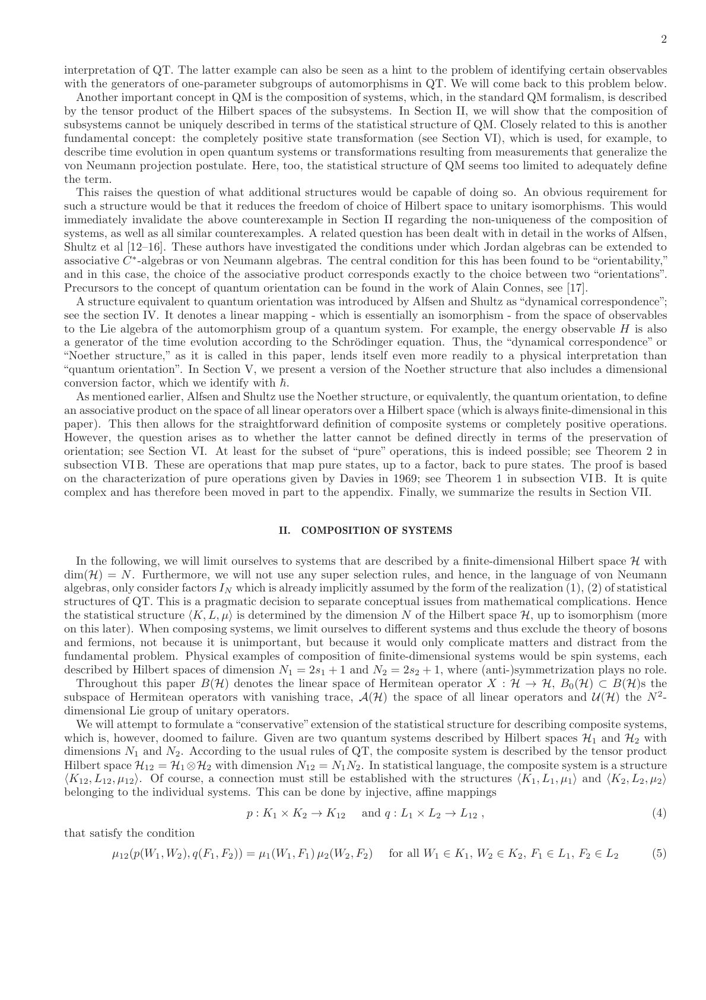
<figcaption class="paper-figure-caption"><b>Fig 1.</b> Low-resolution page preview, page 2</figcaption>
</figure>
<figure class="paper-figure-card">
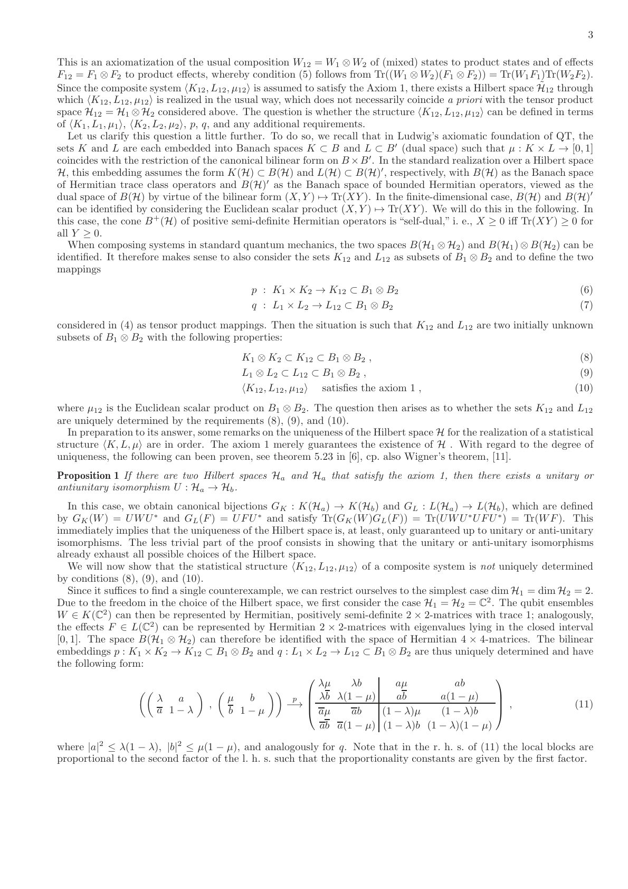
<figcaption class="paper-figure-caption"><b>Fig 2.</b> Low-resolution page preview, page 3</figcaption>
</figure>
<figure class="paper-figure-card">
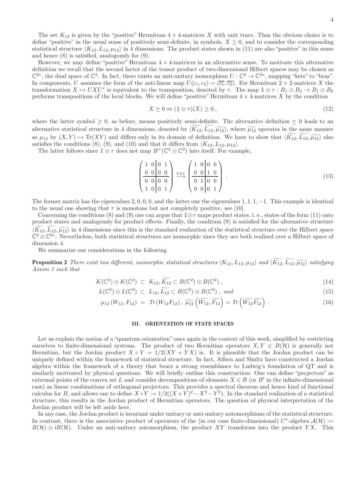
<figcaption class="paper-figure-caption"><b>Fig 3.</b> Low-resolution page preview, page 4</figcaption>
</figure>
<figure class="paper-figure-card">

<figcaption class="paper-figure-caption"><b>Fig 4.</b> Low-resolution page preview, page 5</figcaption>
</figure>
<figure class="paper-figure-card">

<figcaption class="paper-figure-caption"><b>Fig 5.</b> Low-resolution page preview, page 6</figcaption>
</figure>
</div>

<p><strong>Summary.</strong> This theoretical paper proposes that describing composite quantum systems requires a 'Noether structure' beyond the standard statistical axioms. The authors demonstrate that this structure is necessary because simple tensor product rules lead to non-unique mathematical descriptions of combined states and operations. Ultimately, they establish that physical reality must select one specific 'quantum orientation' from multiple mathematically possible choices.</p>
<p><strong>Why it may be interesting.</strong> This work tackles foundational issues regarding how quantum theories must be mathematically structured when combining subsystems or defining irreversible processes (operations), which is crucial for understanding open quantum systems dynamics.</p>
<details>
<summary>Detailed structure</summary>
<p><strong>Main problem.</strong> The paper argues that quantum theory requires an additional 'Noether structure' beyond its statistical framework to properly describe system composition and define completely positive operations.</p>
<p><strong>Main result.</strong> The standard statistical structure for composite systems is not unique, requiring the specification of a 'quantum orientation' (a choice between two possible structures) to fully characterize physical reality.</p>
<p><strong>Method.</strong> The analysis uses axiomatic approaches, comparing the statistical structure $\langle K, L, \mu 
angle$ with requirements for tensor product mappings and analyzing geometric structures like principal bundles over state spaces.</p>
<p><strong>Model / system.</strong> The focus is on abstract Quantum Theory (QT) foundations, specifically dealing with observables (Hermitian operators), state spaces ($K$), effect spaces ($L$), and the composition of systems via Hilbert space tensor products in the finite-dimensional limit.</p>
<p><strong>Key observables.</strong> Observables are Hermitian operators; key diagnostics include the structure of product states and the existence/choice of 'quantum orientation'.</p>
<p><strong>Important parameters / regimes.</strong> The analysis is strictly limited to the finite-dimensional case ($  ext{dim}(H)=N$).</p>
<p><strong>Assumptions / limitations.</strong> The primary assumption is that the statistical structure alone is insufficient, necessitating the introduction of the Noether structure; the analysis also assumes specific mappings related to tensor products.</p>
<p><strong>Figures summary.</strong> Not specified in the notes, but references include geometric structures like principal bundles ($\pi: B 	o F_3$) and algebraic identities derived from operator traces (Appendix C).</p>
<p><strong>Paper structure.</strong> The paper progresses by first identifying the insufficiency of the statistical structure, then investigating composition via tensor products, leading to the discovery of non-uniqueness in composite structures. It concludes with detailed mathematical proofs concerning homeomorphisms between state space descriptions and the characterization of pure operations.</p>
</details>
<details>
<summary>Abstract</summary>
<p>In this paper we argue that, in addition to the statistical structure of quantum theory, another structure, referred to here as the ``Noether structure," is necessary to describe the composition of systems and to define completely positive operations. A Noether structure reflects the dual role of Hermitian operators as observables on the one hand and as generators of symmetry transformations on the other. This idea has been expressed in a similar form in the works of Alfsen and Shultz, who investigated the conditions under which the Jordan product can be extended to an associative product of operator algebras. Our investigations into the Noether structure and the composition of systems are limited to the finite-dimensional case and establish a connection to completely positive operations. In the case of pure operations, the latter can be characterized as orientation-preserving maps.</p>
</details>
<p><sub><a href="#top">↑ back to top</a></sub></p>

<p><a id="paper-2607.04207"></a></p>
<h3 id="uniform-mixing-and-math986math-uniform-mixing-on-cycles"><a href="http://arxiv.org/abs/2607.04207v1">Uniform mixing and $ε$-uniform mixing on cycles</a></h3>
<p><strong>Authors:</strong> Xiwang Cao, Cuiwen Zhu<br>
<strong>Type:</strong> theory · <strong>Category:</strong> other · <strong>PDF:</strong> <a href="https://arxiv.org/pdf/2607.04207v1">https://arxiv.org/pdf/2607.04207v1</a><br>
<strong>Analysis basis:</strong> full PDF text, analyzed in chunks
<strong>Topic relevance:</strong> <code>analog quantum simulation</code> <strong>1/5</strong> · <code>entanglement &amp; information structure</code> <strong>1/5</strong> · <code>methods for driven-dissipative</code> <strong>1/5</strong> · <code>non-equilibrium dynamics</code> <strong>1/5</strong></p>
<div class="figure-strip-hint">↔ Scroll figures horizontally</div>
<div class="paper-figures-scroll">
<figure class="paper-figure-card">

<figcaption class="paper-figure-caption"><b>Fig 1.</b> Low-resolution page preview, page 2</figcaption>
</figure>
<figure class="paper-figure-card">

<figcaption class="paper-figure-caption"><b>Fig 2.</b> Low-resolution page preview, page 3</figcaption>
</figure>
<figure class="paper-figure-card">

<figcaption class="paper-figure-caption"><b>Fig 3.</b> Low-resolution page preview, page 4</figcaption>
</figure>
<figure class="paper-figure-card">

<figcaption class="paper-figure-caption"><b>Fig 4.</b> Low-resolution page preview, page 5</figcaption>
</figure>
<figure class="paper-figure-card">
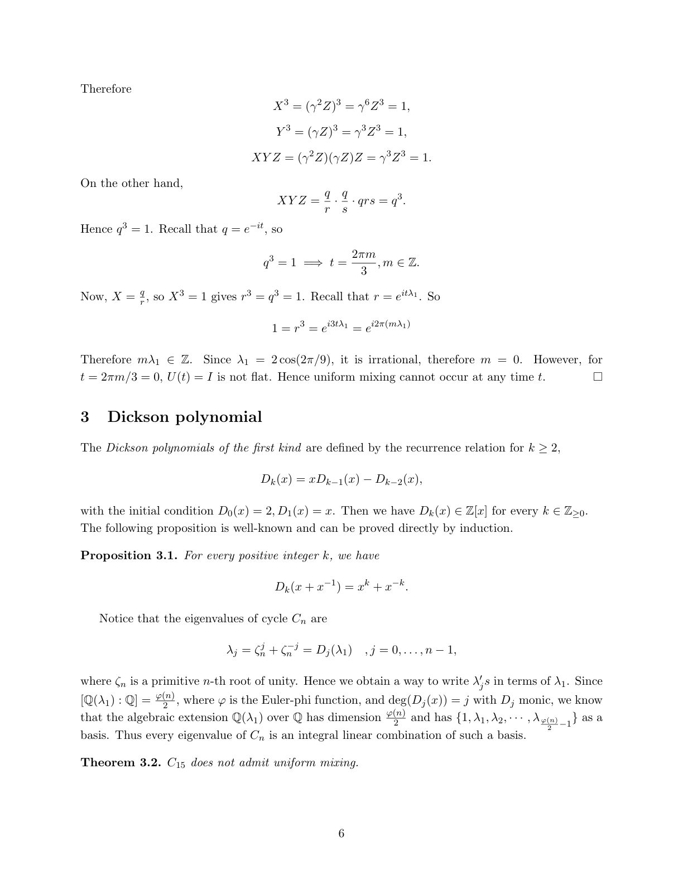
<figcaption class="paper-figure-caption"><b>Fig 5.</b> Low-resolution page preview, page 6</figcaption>
</figure>
</div>

<p><strong>Summary.</strong> This paper analyzes when continuous-time quantum walks on cycle graphs achieve perfect or near-perfect mixing. It proves that specific cycles, like $C_9$ and $C_{15}$, fail to mix uniformly at any time. Conversely, it establishes a positive result by showing that cycles of the form $C_{p^2}$ do admit $\epsilon$-uniform mixing for all primes $p$, using advanced spectral and algebraic methods.</p>
<p><strong>Why it may be interesting.</strong> The study of quantum walks' mixing properties is central to understanding quantum transport, decoherence, and the efficiency of quantum computation protocols in graph structures. The distinction between exact (uniform) and approximate ($\epsilon$-uniform) mixing provides deep insights into the underlying symmetries and algebraic structure of the graph.</p>
<details>
<summary>Detailed structure</summary>
<p><strong>Main problem.</strong> The study investigates the mixing properties (uniform and $\epsilon$-uniform) of continuous-time quantum walks evolving on cycle graphs ($C_n$).</p>
<p><strong>Main result.</strong> The paper proves that $C_9$ and $C_{15}$ do not admit uniform mixing, while demonstrating that $C_{p^2}$ admits $\epsilon$-uniform mixing for any prime $p$.</p>
<p><strong>Method.</strong> The analysis combines spectral theory (using eigenvalues of the adjacency matrix) with advanced algebraic techniques like Gröbner basis calculations to establish necessary and sufficient conditions for perfect mixing.</p>
<p><strong>Model / system.</strong> The model is a continuous-time quantum walk on a cycle graph $C_n$, whose evolution is governed by the unitary operator $U(t) = \exp(itA)$, where $A$ is the adjacency matrix.</p>
<p><strong>Key observables.</strong> Uniform mixing (where $|U(t)_{u,v}|^2 = 1/n$) and $\epsilon$-uniform mixing ($\|U(t) \circ U(t)^{*}-I/n\| < \epsilon$).</p>
<p><strong>Important parameters / regimes.</strong> The cycle length $n$, specifically focusing on $C_9$, $C_{15}$, and $C_{p^2}$.</p>
<p><strong>Assumptions / limitations.</strong> The analysis relies heavily on the spectral decomposition of the evolution operator and algebraic results concerning roots of unity.</p>
<p><strong>Paper structure.</strong> The paper first establishes general conditions for uniform mixing using polynomial ideals (demonstrated via Gröbner bases for $C_9$ and $C_{15}$), followed by a separate analysis proving $\epsilon$-uniform mixing on $C_{p^2}$ using spectral approximation techniques.</p>
</details>
<details>
<summary>Abstract</summary>
<p>We study continuous-time quantum walks on cycles. We prove two complementary results. Firstly, the cycle $C_9$ does not admit uniform mixing at any time. Using the similar idea and Dickson polynomials, we prove that $C_{15}$ does not admit uniform mixing at any time neither. Secondly, for every prime $p$, we show that the cycle $C_{p^2}$ admits $ε$-uniform mixing.</p>
</details>
<p><sub><a href="#top">↑ back to top</a></sub></p>

<p><a id="paper-2607.05109"></a></p>
<h3 id="characterisation-of-a-satellite-to-ground-channel-for-continuous-variable-quantum-key-distribution-protocol"><a href="http://arxiv.org/abs/2607.05109v1">Characterisation of a satellite-to-ground channel for continuous variable quantum key distribution protocol</a></h3>
<p><strong>Authors:</strong> Emma Tien Hwai Medlock, Vinod N. Roa, Timothy Spiller, Rupesh Kumar<br>
<strong>Type:</strong> theory · <strong>Category:</strong> other · <strong>PDF:</strong> <a href="https://arxiv.org/pdf/2607.05109v1">https://arxiv.org/pdf/2607.05109v1</a><br>
<strong>Analysis basis:</strong> full PDF text, analyzed in chunks
<strong>Topic relevance:</strong> <code>correlated / nonlocal dissipation</code> <strong>1/5</strong> · <code>interference shaping light</code> <strong>1/5</strong> · <code>quantum measurements</code> <strong>1/5</strong></p>
<div class="figure-strip-hint">↔ Scroll figures horizontally</div>
<div class="paper-figures-scroll">
<figure class="paper-figure-card">

<figcaption class="paper-figure-caption"><b>Fig 1.</b> Figure 1: Satellite pass over the OGS. Here, the CV-QKD exchange occurs between zenith angles −30◦and +30◦. For this scenario, the satellite will have an altitude of 550 km.</figcaption>
</figure>
<figure class="paper-figure-card">
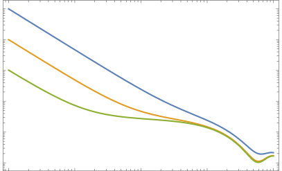
<figcaption class="paper-figure-caption"><b>Fig 2.</b> Figure 2: C2 N profiles as a function of altitudes (shown on the top) and the weighted C2 N profile for 550 km downlink as a function of zenith angles (shown on the bottom). Here the power law parameter for day time pday = 1.33 was used, random background turbulence parameter M = 1, root-mean-square high altitude wind speed vw = 21 m/s, and with the initial turbulence strengths as seen in the parameter table.</figcaption>
</figure>
<figure class="paper-figure-card">
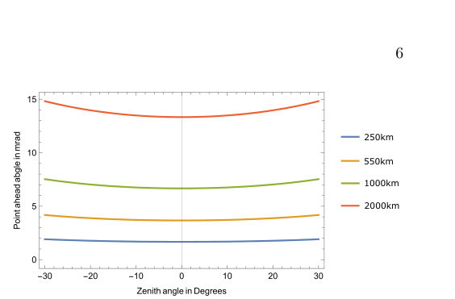
<figcaption class="paper-figure-caption"><b>Fig 3.</b> Figure 3: Point ahead angle for a given satellite altitude. The PAA changes with increasing altitudes of the satellite, ranging from 250 km to 2000 km. This is a typical range for LEO satellites.</figcaption>
</figure>
<figure class="paper-figure-card">

<figcaption class="paper-figure-caption"><b>Fig 4.</b> Figure 4: Total upper bound channel loss with differing receiver aperture sizes. This was done for a strong turbulence regime, with a wavelength of 1550 nm, a transmitter aperture of 8 cm, a pointing error at the satellite of 4 µrad, and with the satellite at an altitude of 550 km.</figcaption>
</figure>
<figure class="paper-figure-card">
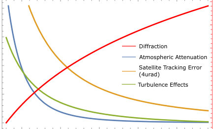
<figcaption class="paper-figure-caption"><b>Fig 5.</b> Figure 5: The losses as a dependency of wavelength at the zenith is plotted. Here the atmospheric absorption lines have not been taken into consideration. The losses are plotted for a receiver aperture of 60 cm with 30% obstruction, a transmitter aperture of 8 cm, a pointing error at the satellite of 4 µrad, and with the satellite at an altitude of 550 km. This is the loss for a Gaussian modulated CV (GMCV) QKD protocol. For DV-QKD, there will be additional losses due to phase error [50–52] that GMCV does not need to consider as the transmitted local oscillator will experience the same phase drift as the quantum signal [53–55].</figcaption>
</figure>
</div>

<p><strong>Summary.</strong> This paper characterizes the complex, variable channel loss encountered when performing Continuous Variable Quantum Key Distribution from a satellite to Earth due to atmospheric turbulence and beam spreading. By modeling these physical impairments across different zenith angles, the authors demonstrate that secure quantum key generation remains feasible under specific operational constraints.</p>
<p><strong>Why it may be interesting.</strong> This work is highly relevant to quantum optics and open quantum systems as it provides a rigorous theoretical framework for quantifying decoherence and loss mechanisms (scintillation, wandering) in real-world, dynamic free-space quantum channels. The integration of atmospheric physics into QKD security analysis is key.</p>
<details>
<summary>Detailed structure</summary>
<p><strong>Main problem.</strong> The paper addresses the challenge of characterizing dynamic channel loss for Continuous Variable Quantum Key Distribution (CV-QKD) when transmitting signals from a Low Earth Orbit (LEO) satellite to a ground station.</p>
<p><strong>Main result.</strong> It demonstrates that by characterizing variable channel losses due to atmospheric effects like turbulence and beam wandering, it is possible to generate a positive secret key rate under restricted security assumptions for the proposed space-based QKD link.</p>
<p><strong>Method.</strong> The analysis involves modeling atmospheric propagation using established models (e.g., Hufnagel-Andrew-Phillips) to calculate weighted averages of refractive index structure parameters ($C_N^2$), alongside detailed calculations for scintillation variance and beam spreading loss.</p>
<p><strong>Model / system.</strong> The system modeled is a satellite-to-ground free-space optical link operating at 1550 nm, utilizing the parameters derived from the SPOQC mission concept. The analysis incorporates effects like atmospheric attenuation, turbulence-induced broadening, and pointing inaccuracies.</p>
<p><strong>Key observables.</strong> Achievable secret key rates, weighted $C_N^2$ profiles vs. zenith angle, scintillation variance ($\sigma^2_{	ext{sci}}(	heta)$), and total loss due to various atmospheric impairments.</p>
<p><strong>Important parameters / regimes.</strong> Zenith angles between $-30^\circ$ and $+30^\circ$, LEO altitude (550 km), wavelength (1550 nm), and varying turbulence strengths ($C_N^2$).</p>
<p><strong>Assumptions / limitations.</strong> The analysis relies on practical assumptions, restricted Eve security assumptions, and models the channel loss based on specific atmospheric propagation equations.</p>
<p><strong>Figures summary.</strong> Figure 1 illustrates the satellite pass geometry over the ground station. Figure 2 shows profiles of $C_N^2$ versus altitude (top) and weighted $C_N^2$ versus zenith angle (bottom).</p>
<p><strong>Paper structure.</strong> The paper first establishes the necessity of characterizing dynamic loss in space-based CV-QKD. It then details the physical modeling of atmospheric effects, including turbulence and beam spreading across various zenith angles. Finally, it presents the derived key rate analysis based on these characterized channel parameters.</p>
</details>
<details>
<summary>Abstract</summary>
<p>In space based quantum key distribution (QKD) protocols, the quantum channel will be dynamic in nature and the channel loss will change with respect to the zenith angle. In the context of continuous variable (CV)-QKD, this will cause issues with parameter estimation and for a transmitted local oscillator in particular it will also fluctuate the shot noise. Therefore, it is vital to characterise this channel loss and the sources of this loss. In this paper the varying channel loss is characterised under practical assumptions. This is shown for various different scenarios, turbulence strengths, as well as wavelengths. This work shows, for the channel parameters considered, it is possible to generate a positive secret key if restricted Eve security assumptions are made.</p>
</details>
<p><sub><a href="#top">↑ back to top</a></sub></p>

<p><a id="paper-2607.05014"></a></p>
<h3 id="geometric-characteristics-of-subproblems-in-ising-machine-assisted-large-neighborhood-search"><a href="http://arxiv.org/abs/2607.05014v1">Geometric Characteristics of Subproblems in Ising-Machine-Assisted Large Neighborhood Search</a></h3>
<p><strong>Authors:</strong> Masashi Yamashita, Shu Tanaka<br>
<strong>Type:</strong> both · <strong>Category:</strong> disordered systems and neural networks · <strong>PDF:</strong> <a href="https://arxiv.org/pdf/2607.05014v1">https://arxiv.org/pdf/2607.05014v1</a><br>
<strong>Analysis basis:</strong> full PDF text, analyzed in chunks
<strong>Topic relevance:</strong> <code>analog quantum simulation</code> <strong>1/5</strong> · <code>exotic spin models in light-matter</code> <strong>1/5</strong></p>
<div class="figure-strip-hint">↔ Scroll figures horizontally</div>
<div class="paper-figures-scroll">
<figure class="paper-figure-card">
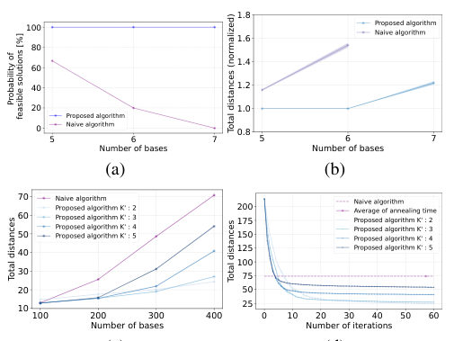
<figcaption class="paper-figure-caption"><b>Fig 1.</b> Fig. 1. Comparison between LNS and the naive approach under an equal total annealing-time budget. (a) Feasible-solution probability obtained with D-Wave Advantage 4.1 for small VRP instances. (b) Normalized total dis- tance obtained with D-Wave Advantage 4.1. (c) Final total distance obtained with Fixstars Amplify AE for VRP instances with 100, 200, 300, and 400 customers. (d) Total distance of the current solution as a function of the it- eration number for the 400-customer instance. In panels (a), (b), and (c), the horizontal axis shows the number of customers N. In the naive approach, the full QUBO problem is submitted to the Ising machine once. In LNS, sub- problems are solved...</figcaption>
</figure>
<figure class="paper-figure-card">

<figcaption class="paper-figure-caption"><b>Fig 2.</b> Fig. 2. Final total distance obtained by LNS-K and LNS-Q for a vehicle routing problem with 400 customers. LNS-K constructs a subproblem from selected vehicles and the customers visited by those vehicles in the current solution, whereas LNS-Q constructs a subproblem from QUBO variables and the associated constraints. The horizontal labels indicate K′ for LNS-K and n′ for LNS-Q. The corresponding numbers of binary variables in the subprob- lems are summarized in Table II. Although n′ allows LNS-Q to control the subproblem size more finely, LNS-K gives shorter final total distances under the tested conditions.</figcaption>
</figure>
<figure class="paper-figure-card">

<figcaption class="paper-figure-caption"><b>Fig 3.</b> Fig. 3. Iterative behavior of LNS-K and LNS-Q for subproblems with the same number of binary variables. The results are for a vehicle routing prob- lem with 400 customers. Each row corresponds to K′ = 2, 3, 4, and 5 in LNS-K, and n′ in LNS-Q is chosen to match the corresponding subproblem size, as listed in Table II. (a) Total distance of the current solution. LNS-K shows faster iterative improvement than LNS-Q, especially for smaller sub- problems. (b) Position variance of the selected customer set. In LNS-K, the selected customer set becomes more spatially localized during the optimiza- tion, whereas the position variance in LNS-Q remains nearly constant.</figcaption>
</figure>
</div>

<p><strong>Summary.</strong> This paper investigates how to effectively use Large Neighborhood Search (LNS) with Ising machines to solve large Vehicle Routing Problems. By comparing two subproblem construction methods, LNS-K and LNS-Q, the authors demonstrate that incorporating the semantic structure of the current solution is crucial for optimization success. The findings suggest that structural information matters more than simply controlling the size of the variables fed into the quantum annealer.</p>
<p><strong>Why it may be interesting.</strong> While focused on optimization heuristics, the reliance on mapping complex combinatorial problems onto QUBOs solved by quantum annealers touches upon the practical application of quantum computation for hard constraint satisfaction problems relevant to many-body physics modeling.</p>
<details>
<summary>Detailed structure</summary>
<p><strong>Main problem.</strong> The study addresses limitations when using Ising machines for large-scale combinatorial optimization problems, specifically QUBO formulations of VRPs.</p>
<p><strong>Main result.</strong> Subproblem design for sequential optimization must consider the semantic and geometric structure inherited from the current solution, not just the number of binary variables.</p>
<p><strong>Method.</strong> The authors compare two Large Neighborhood Search (LNS) strategies: LNS-K (based on route structure) and LNS-Q (based on QUBO variables), applied to VRPs solved via Ising machines.</p>
<p><strong>Model / system.</strong> The model is a Vehicle Routing Problem (VRP) formulated as a QUBO, which is then optimized iteratively using an Ising machine framework. The comparison focuses on how the subproblem is constructed from the current solution state.</p>
<p><strong>Key observables.</strong> Total distance achieved, position variance (spatial spread of selected customers), and the number of binary variables in the subproblems.</p>
<p><strong>Important parameters / regimes.</strong> The size of the subproblem ($B_m$), the type of construction rule (LNS-K vs. LNS-Q), and the controlled annealing time budget for quantum annealers.</p>
<p><strong>Assumptions / limitations.</strong> The comparison is limited by matching either the number of variables or the total annealing time, not end-to-end wall-clock runtime; a causal link between geometric localization and performance improvement is not established.</p>
<p><strong>Figures summary.</strong> Figures illustrate that LNS-K yields shorter total distances and shows decreasing position variance during iterations compared to LNS-Q, even when subproblem sizes are matched.</p>
<p><strong>Paper structure.</strong> The paper introduces the challenge of large QUBOs for Ising machines, proposes using LNS, and then systematically compares two construction methods (LNS-K vs. LNS-Q) on VRP instances by analyzing performance metrics like distance and spatial variance.</p>
</details>
<details>
<summary>Abstract</summary>
<p>Large-scale quadratic unconstrained binary optimization (QUBO) formulations of constrained combinatorial optimization problems often exceed the input-size limit of present Ising machines or suffer from degraded solution quality as the number of binary variables increases. Large neighborhood search (LNS) mitigates this difficulty by sequentially optimizing restricted subproblems, but the structural factors that distinguish subproblems beyond the number of binary variables remain insufficiently characterized. In this study, we examine vehicle routing problems and compare a construction based on the vehicle routes of the current solution, denoted by LNS-K, with a construction based on QUBO variables and constraint relations, denoted by LNS-Q, while controlling the number of binary variables in the subproblems. Under the tested conditions, LNS-K obtained shorter total distances than LNS-Q in the matched-size comparisons, and the position variance, a measure of the spatial spread of the selected customers, decreased during the iterations in LNS-K. These observations suggest that subproblem design for sequential optimization with Ising machines should consider not only subproblem size but also semantic and geometric structures inherited from the current solution.</p>
</details>
<p><sub><a href="#top">↑ back to top</a></sub></p>

<p><a id="paper-2607.04915"></a></p>
<h3 id="how-hard-is-quantum-advantage-a-cloud-microphysics-stress-test-for-variational-quantum-models"><a href="http://arxiv.org/abs/2607.04915v1">How Hard Is Quantum Advantage? A Cloud Microphysics Stress Test for Variational Quantum Models</a></h3>
<p><strong>Authors:</strong> Felix Herbort, Ellen Sarauer, Daniel Ohl de Mello, Paul Christiansen, Steffen Hien, Cedric Brügmann, Dieter Jaksch, Veronika Eyring, Martin Kiffner, Mierk Schwabe<br>
<strong>Type:</strong> both · <strong>Category:</strong> disordered systems and neural networks · <strong>PDF:</strong> <a href="https://arxiv.org/pdf/2607.04915v1">https://arxiv.org/pdf/2607.04915v1</a><br>
<strong>Analysis basis:</strong> full PDF text, analyzed in chunks
<strong>Topic relevance:</strong> <code>driven-dissipative phase transition</code> <strong>1/5</strong> · <code>methods for driven-dissipative</code> <strong>1/5</strong></p>
<div class="figure-strip-hint">↔ Scroll figures horizontally</div>
<div class="paper-figures-scroll">
<figure class="paper-figure-card">

<figcaption class="paper-figure-caption"><b>Fig 1.</b> Figure 1: Hybrid quantum neural network architecture. (a) Our model consists of a quantum circuit with repeated trainable data encoding layers U and trainable entangling layers V . The circuit’s output state is measured on M qubits and basis state probabilities pm. (b) The probabilities are then fed into a classical post processing pipeline where polynomials g with trainable coefficients are applied to each pm and a weighted average h computes the final output.</figcaption>
</figure>
<figure class="paper-figure-card">
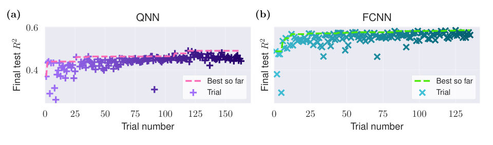
<figcaption class="paper-figure-caption"><b>Fig 2.</b> Figure 2: Evolution of our hyperparameter optimization objective for our hybrid QNN in (a) and FCNN architecture in (b). Each cross marks the R2 test performance of a single HPO trial model. Color brightness additionally encodes trial number, consistently to figures below. A dashed line marks the best model’s score up to the current state of the HPO.</figcaption>
</figure>
<figure class="paper-figure-card">

<figcaption class="paper-figure-caption"><b>Fig 3.</b> Figure 3: QNN performance slices for all hyperparameters throughout the HPO. The first row shows number of data reuploading layers L, additional variational layers ¯L, use of strongly entangling layers and whether to train reuploading factors β. The second row shows classical post-processing polynomial gγ, batch size NB, learning rate η, and number of measurement qubits M. Box-plots refer to discretized hyperparameters where in each box plot, the central green line denotes the median, the box spans the interquartile range (IQR, Q1–Q3), the whiskers extend to 1.5×IQR beyond the box edges, and individual dots mark outliers beyond the whiskers. For most hyperparameters, this data gives a clear...</figcaption>
</figure>
<figure class="paper-figure-card">
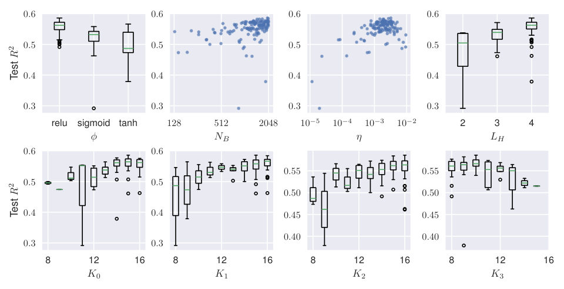
<figcaption class="paper-figure-caption"><b>Fig 4.</b> Figure 4: FCNN performance slices for all hyperparameters throughout the HPO. The first row shows activation function ϕ, batch size NB, learning rate η, and number of hidden layers LH. The bottom row shows number of kernels Kl for the respective hidden layer l. Box-plots refer to discretized hyperparameters where in each box plot, the central green line denotes the median, the box spans the interquartile range (IQR, Q1–Q3), the whiskers extend to 1.5×IQR beyond the box edges, and individual dots mark outliers beyond the whiskers. The optimized hyperparameters show good agreement with established standards in classical neural network literature. For instance, increasing the numbers of layers...</figcaption>
</figure>
<figure class="paper-figure-card">
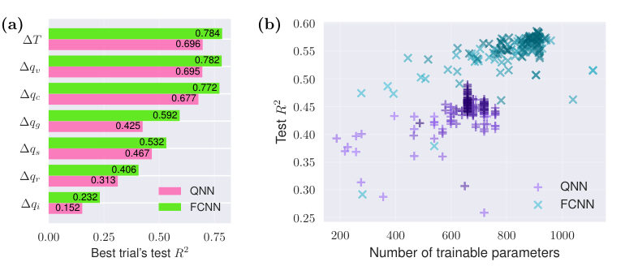
<figcaption class="paper-figure-caption"><b>Fig 5.</b> Figure 5: (a) R2 scores of all targets for QNN and FCNN. For all models we have a score of R2 &gt; 0 but FCNN outperforms the best QNN for every output. (b) Effect of number of trainable parameters on model performance. Except for few outliers which arise from uncommon choices of hyperparameters, FCNNs consistently outperform the QNN model. However, we note that simple parameter count comparison should not be the only quantity to compare as we discuss in Sec. 5.</figcaption>
</figure>
</div>

<p><strong>Summary.</strong> This work tests Quantum Machine Learning (QML) by applying hybrid QNNs to model cloud microphysics in climate science. Despite significant optimization efforts, the quantum models were outperformed by simpler classical neural networks. The findings underscore that while QML shows potential, substantial theoretical and practical improvements are needed before it can reliably tackle complex physical modeling tasks.</p>
<p><strong>Why it may be interesting.</strong> Although focused on climate physics, the core challenge—applying quantum models to complex, high-dimensional physical parameterizations—is relevant for developing novel machine learning techniques applicable to open quantum systems or strongly correlated materials simulations where classical methods struggle.</p>
<details>
<summary>Detailed structure</summary>
<p><strong>Main problem.</strong> The paper assesses whether Quantum Machine Learning (QML) can effectively parameterize complex physical processes, specifically cloud microphysics in climate modeling, and identifies the limitations of variational quantum models.</p>
<p><strong>Main result.</strong> While QNNs benefit from extensive hyperparameter optimization, they were outperformed by simple classical fully-connected neural networks on the benchmark task. This highlights a need to improve VQMs to fill gaps where classical methods fail or are inefficient.</p>
<p><strong>Method.</strong> A hybrid quantum neural network (QNN) architecture was implemented, combining quantum circuits for data encoding and feature extraction with classical post-processing layers. Performance was rigorously compared against optimized classical FCNN baselines using Mean Squared Error minimization.</p>
<p><strong>Model / system.</strong> The system modeled is cloud microphysics parameterization, involving phase transitions of water in the atmosphere, derived from large atmospheric datasets (ICON model). The ML models used are hybrid QNNs and standard FCNNs trained to predict changes in state variables like temperature and mass mixing ratios.</p>
<p><strong>Key observables.</strong> Test $R^2$ score, Mean Squared Error (MSE), basis state probabilities ($p_m$), and various atmospheric tendencies ($\Delta T$, $\Delta qv$, etc.).</p>
<p><strong>Important parameters / regimes.</strong> Hyperparameters optimized included circuit depth ($L$), number of qubits ($M$), learning rates ($\eta$), and polynomial degrees ($P$).</p>
<p><strong>Assumptions / limitations.</strong> The primary limitation noted is the presence of extreme outliers in the training data, which artificially inflate the loss function and affect performance metrics.</p>
<p><strong>Figures summary.</strong> Figures illustrate the hybrid QNN architecture (quantum circuit $
ightarrow$ classical post-processing) and show the convergence of test $R^2$ scores for both QNNs and FCNNs during hyperparameter optimization.</p>
<p><strong>Paper structure.</strong> The paper introduces the problem, details the hybrid QNN/FCNN methodology using extensive data preprocessing and HPO routines, presents comparative results showing classical superiority, and concludes by discussing bottlenecks in VQMs.</p>
</details>
<details>
<summary>Abstract</summary>
<p>Quantum machine learning (QML) could have the potential to leverage advantages of quantum over classical computing but still lacks strong evidence of actual improvements and scalability, partly due to phenomena such as barren plateaus. In this paper, we employ a hybrid quantum neural network (QNN) on a dataset on cloud microphysics, containing processes for phase transitions of water in the atmosphere and its related temperature changes, which are highly relevant for accurate climate predictions and projections. To reach optimal performance of our QNNs, we employ a rich and trainable frequency spectrum together with expressivity enhancing classical postprocessing. We find that our QNNs strongly benefit from extensive hyperparameter optimization and thereby demonstrate the feasibility of applying QNNs to complex physical systems. At the same time, the QNNs are outperformed by classical baselines in the form of simple fully-connected neural networks. We discuss identified bottlenecks of this class of quantum models to learn the full complexity of the cloud microphysics dataset to show that there is a need to further understand and improve variational quantum models for machine learning such that they might fill the gap where classical models fail or are inefficient.</p>
</details>
<p><sub><a href="#top">↑ back to top</a></sub></p>

<p><a id="paper-2607.04936"></a></p>
<h3 id="noise-limited-secret-key-agreement-with-twin-optical-physically-unclonable-functions"><a href="http://arxiv.org/abs/2607.04936v1">Noise-limited secret key agreement with twin optical physically unclonable functions</a></h3>
<p><strong>Authors:</strong> Georgios M. Nikolopoulos<br>
<strong>Type:</strong> theory · <strong>Category:</strong> other · <strong>PDF:</strong> <a href="https://arxiv.org/pdf/2607.04936v1">https://arxiv.org/pdf/2607.04936v1</a><br>
<strong>Analysis basis:</strong> full PDF text, analyzed in chunks
<strong>Topic relevance:</strong> <code>entanglement &amp; information structure</code> <strong>1/5</strong> · <code>interference shaping light</code> <strong>1/5</strong></p>
<div class="figure-strip-hint">↔ Scroll figures horizontally</div>
<div class="paper-figures-scroll">
<figure class="paper-figure-card">

<figcaption class="paper-figure-caption"><b>Fig 1.</b> Figure 1. Schematic representation of the main steps in the key agreement with twin PUFs.</figcaption>
</figure>
<figure class="paper-figure-card">
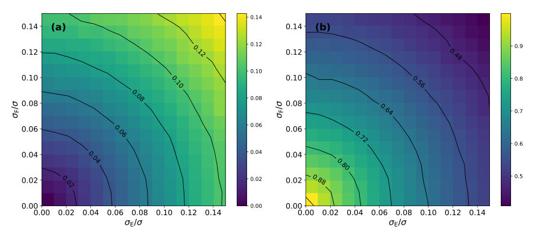
<figcaption class="paper-figure-caption"><b>Fig 2.</b> Figure 2. The maximum BER Qmax (a) and the corresponding channel capacity Cmin (b), are shown for different standard deviations of fabrication and environmental noise. The results have been obtained for 200 independent twins and 200 independent realizations for each twin. The fabrication and environmental noise have been treated as described in Sec. 2 . Other parameters: N = 104, l/L = 0.2, 1−bit SLM, transmission geometry.</figcaption>
</figure>
</div>

<p><strong>Summary.</strong> This work proposes using twin optical PUFs—which derive their randomness from correlated speckle patterns generated by light scattering—to establish a secret key. It develops a rigorous, information-theoretic protocol for key agreement that accounts for environmental noise and fabrication variability. This offers a hardware-based alternative to traditional quantum key distribution methods.</p>
<p><strong>Why it may be interesting.</strong> While not directly about quantum dynamics, the reliance on complex physical phenomena like light scattering in disordered media to generate high-entropy random numbers touches upon open questions at the intersection of condensed matter physics (disorder) and information theory.</p>
<details>
<summary>Detailed structure</summary>
<p><strong>Main problem.</strong> The paper investigates establishing a shared secret key between two parties using twin optical Physical Unclonable Functions (PUFs) as a hardware-based platform for cryptography.</p>
<p><strong>Main result.</strong> An explicit information-theoretic protocol is developed that quantifies the achievable lower bound on the final secret key length, identifying noise regimes where secure agreement is feasible without relying on computational assumptions.</p>
<p><strong>Method.</strong> The core method involves developing an information-theoretic key-agreement protocol incorporating secure sketches, error reconciliation, and privacy amplification applied to correlated PUF responses.</p>
<p><strong>Model / system.</strong> The physical platform utilizes twin O-PUFs, where the fingerprint is a speckle pattern generated by coherent light scattering through disordered optical structures. The model mathematically describes the output electric field using linear scattering theory involving transmission matrices.</p>
<p><strong>Key observables.</strong> Information leakage due to public helper data; lower bounds on the length of the final secret key; Bit Error Rate (BER) between raw keys.</p>
<p><strong>Important parameters / regimes.</strong> Fabrication-induced variability ($\sigma_F$) and environmental noise ($\sigma_E$); the maximum allowed Hamming distance ($t$).</p>
<p><strong>Assumptions / limitations.</strong> The analysis assumes linear scattering theory in the diffusive limit, challenge uniformity, and that the adversary is limited to observing public classical communication.</p>
<p><strong>Figures summary.</strong> Figure 1 schematically illustrates the main steps of key agreement using twin PUFs, detailing the flow from raw key generation through sketching, reconciliation, and amplification.</p>
<p><strong>Paper structure.</strong> The paper first models the physical process using correlated O-PUFs. It then develops the information-theoretic protocol (sketching $
ightarrow$ reconciliation $
ightarrow$ amplification). Finally, it analyzes the security bounds based on noise regimes and discusses integration into QKD networks.</p>
</details>
<details>
<summary>Abstract</summary>
<p>We investigate the use of twin optical fingerprints derived from correlated physical unclonable functions (PUFs), as a hardware-based platform for cryptographic key generation and distribution. Each fingerprint is associated with a random, yet reproducible speckle pattern, generated when coherent light is scattered by a disordered optical structure. We consider a pair of correlated optical PUFs, and study the conditions under which two honest parties can establish a common secret key, despite fabrication-induced variability and environmental noise. An explicit information-theoretic key-agreement protocol is developed, incorporating secure sketches, error reconciliation, and privacy amplification. We quantify information leakage due to public helper data, and derive lower bounds on the length of the final secret key. The analysis identifies the noise regimes in which secure key agreement is feasible, and examines the performance of both practical and near-capacity reconciliation schemes. Finally, we discuss how twin optical PUFs could be integrated into quantum key distribution (QKD) networks, as a mechanism for establishing an initial pre-shared secret key between two honest users, without relying on computational assumptions or trusted third parties.</p>
</details>
<p><sub><a href="#top">↑ back to top</a></sub></p>

<p><a id="paper-2607.03905"></a></p>
<h3 id="on-estimating-operator-norm-distance-with-optimal-trace-distance-estimation-when-one-state-is-pure"><a href="http://arxiv.org/abs/2607.03905v1">On estimating operator norm distance, with optimal trace distance estimation when one state is pure</a></h3>
<p><strong>Authors:</strong> Yupan Liu, Qisheng Wang, Zhan Yu<br>
<strong>Type:</strong> theory · <strong>Category:</strong> quantum information and computing · <strong>PDF:</strong> <a href="https://arxiv.org/pdf/2607.03905v1">https://arxiv.org/pdf/2607.03905v1</a><br>
<strong>Analysis basis:</strong> full PDF text, analyzed in chunks
<strong>Topic relevance:</strong> <code>entanglement &amp; information structure</code> <strong>1/5</strong> · <code>quantum measurements</code> <strong>1/5</strong></p>
<div class="figure-strip-hint">↔ Scroll figures horizontally</div>
<div class="paper-figures-scroll">
<figure class="paper-figure-card">

<figcaption class="paper-figure-caption"><b>Fig 1.</b> Low-resolution page preview, page 2</figcaption>
</figure>
<figure class="paper-figure-card">

<figcaption class="paper-figure-caption"><b>Fig 2.</b> Low-resolution page preview, page 3</figcaption>
</figure>
<figure class="paper-figure-card">
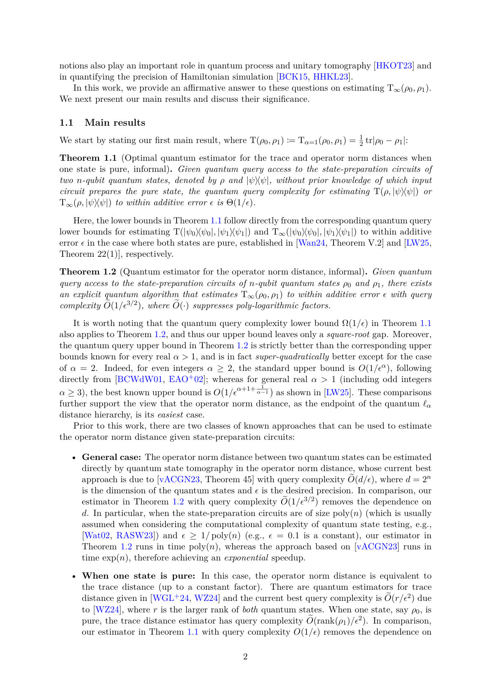
<figcaption class="paper-figure-caption"><b>Fig 3.</b> Low-resolution page preview, page 4</figcaption>
</figure>
<figure class="paper-figure-card">
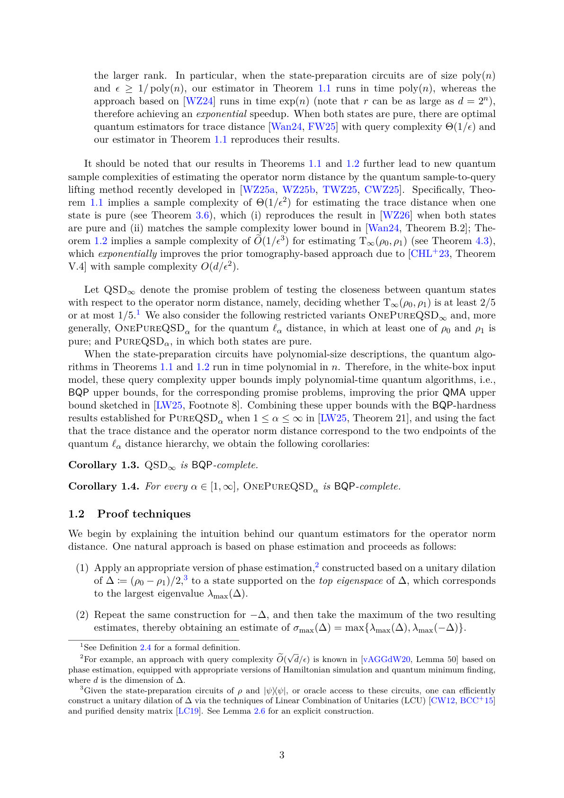
<figcaption class="paper-figure-caption"><b>Fig 4.</b> Low-resolution page preview, page 5</figcaption>
</figure>
<figure class="paper-figure-card">
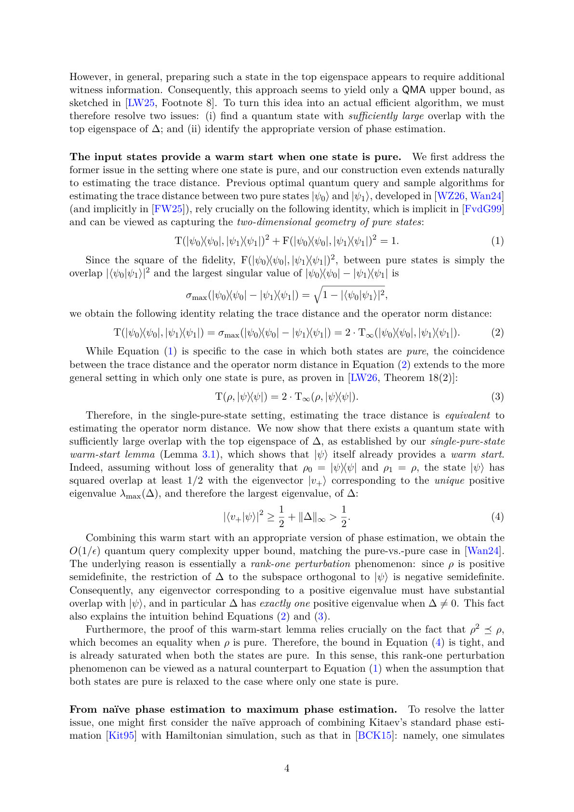
<figcaption class="paper-figure-caption"><b>Fig 5.</b> Low-resolution page preview, page 6</figcaption>
</figure>
</div>

<p><strong>Summary.</strong> This paper tackles the computational challenge of estimating the operator norm distance between two quantum states. The authors introduce novel quantum estimators that achieve optimal query complexity when one state is pure, bypassing limitations in prior work that scaled poorly with state rank. This advances the understanding of resource requirements for fundamental quantum measurement tasks.</p>
<p><strong>Why it may be interesting.</strong> This work provides fundamental algorithmic improvements for quantum information tasks by achieving query complexities independent of state dimension or rank, which is critical for scaling up quantum simulations and protocols.</p>
<details>
<summary>Detailed structure</summary>
<p><strong>Main problem.</strong> The paper investigates the computational complexity of estimating the operator norm distance $T_{\infty}(
ho_0, 
ho_1)$ between two quantum states $
ho_0$ and $
ho_1$. It specifically focuses on achieving efficient estimators whose complexity is independent of the state rank.</p>
<p><strong>Main result.</strong> For the case where one state is pure, an optimal quantum estimator was established with a query complexity of $\Theta(1/\epsilon)$, which is significantly better than prior methods scaling with the state rank. For general states, an estimator achieving $eO(1/\epsilon^{3/2})$ queries was provided.</p>
<p><strong>Method.</strong> The authors develop and analyze quantum estimators using techniques like phase estimation and leveraging structural properties of the operator norm distance when one state is pure. The analysis involves constructing unitary dilations and bounding errors via mean value theorems.</p>
<p><strong>Model / system.</strong> The system involves $n$-qubit quantum states ($
ho_0, 
ho_1$) prepared using polynomial-size circuits. The core mathematical objects are the operator norm distance ($T_{\infty}$) and the trace distance ($T$).</p>
<p><strong>Key observables.</strong> Operator norm distance $T_{\infty}(
ho_0, 
ho_1)$, Trace Distance $T(
ho_0, 
ho_1)$, and the largest singular value $\sigma_{\max}(A)$.</p>
<p><strong>Important parameters / regimes.</strong> The desired precision $\epsilon$ is crucial for determining query complexity. The state rank ($   ext{rank}(
ho)$) is a key parameter that the new methods aim to circumvent dependency on.</p>
<p><strong>Assumptions / limitations.</strong> The analysis relies on the existence of poly$(n)$-size state-preparation circuits and utilizes quantum estimation techniques, including warm starts when one state is pure.</p>
<p><strong>Paper structure.</strong> The paper progresses by first establishing the problem context (estimating $T_{\infty}$), then presenting the optimal estimator for the single-pure-state case with its complexity analysis. It subsequently addresses the general case, providing a second estimator and comparing it to known lower bounds.</p>
</details>
<details>
<summary>Abstract</summary>
<p>We investigate the computational complexity of estimating the operator norm distance ${\rm T}_{\infty}(ρ_0,ρ_1)$, defined via the operator norm $\|A\|_{\infty} = σ_{\max}(A)$, given ${\rm poly}(n)$-size state-preparation circuits of $n$-qubit quantum states $ρ_0$ and $ρ_1$. We provide efficient quantum estimators for the operator norm distance whose complexity is independent of the rank (and thus the dimension) of the states:   1. When one state is pure, we establish an optimal quantum estimator using $Θ(1/ε)$ queries to the state-preparation circuits. Consequently, for constant additive error, say $ε=1/5$, our estimator runs in ${\rm poly}(n)$ time. Since the operator norm distance ${\rm T}_{\infty}(|ψ\rangle\!\langleψ|,ρ)$ is exactly half of the trace distance ${\rm T}(|ψ\rangle\!\langleψ|,ρ)$, our result also gives rank-independent query complexity for estimating both quantities, whereas the approaches due to van Apeldoorn, Cornelissen, Gily{é}n, and Nannicini (SODA 2023) and Wang and Zhang (TIT 2024) have query complexity scaling at least linearly with ${\rm rank}(ρ)$, which can be $\exp(n)$ in general.   2. For general quantum states, we also provide a quantum estimator using $\widetilde{O}(1/ε^{3/2})$ queries to the state-preparation circuits, which shows that the corresponding promise problem is ${\sf BQP}$-complete and improves the ${\sf QMA}$ upper bound sketched by Liu and Wang (ESA 2025). Together with an $Ω(1/ε)$ quantum query complexity lower bound, this leaves only square-root room for improvement.   The key intuition behind our estimators is that, when one state is pure, the pure state $|ψ\rangle$ has overlap at least $1/2$ with the top unit eigenvector of $|ψ\rangle\!\langleψ|-ρ$, reflecting a structural feature specific to the operator norm distance.</p>
</details>
<p><sub><a href="#top">↑ back to top</a></sub></p>

<p><a id="paper-2607.04519"></a></p>
<h3 id="schrodinger-oscillator-and-its-thermal-properties-in-a-dynamical-noncommutative-space"><a href="http://arxiv.org/abs/2607.04519v1">Schrodinger Oscillator and its Thermal Properties in a Dynamical Noncommutative Space</a></h3>
<p><strong>Authors:</strong> Ilyas Haouam<br>
<strong>Type:</strong> theory · <strong>Category:</strong> statistical mechanics · <strong>PDF:</strong> <a href="https://arxiv.org/pdf/2607.04519v1">https://arxiv.org/pdf/2607.04519v1</a><br>
<strong>Analysis basis:</strong> full PDF text, analyzed in chunks
<strong>Topic relevance:</strong> <code>Keldysh / 2PI / non-Gaussian methods</code> <strong>1/5</strong> · <code>driven-dissipative phase transition</code> <strong>1/5</strong></p>
<div class="figure-strip-hint">↔ Scroll figures horizontally</div>
<div class="paper-figures-scroll">
<figure class="paper-figure-card">

<figcaption class="paper-figure-caption"><b>Fig 1.</b> Figure 1: 3D plots of the NC energy eigenvalues ENC n,l as a function of quantum numbers n &amp; l, shown for</figcaption>
</figure>
<figure class="paper-figure-card">

<figcaption class="paper-figure-caption"><b>Fig 2.</b> Figure 2: (a) Energy eigenvalues ENC n,l as a function of Θ, shown for different values of the oscillator angular</figcaption>
</figure>
<figure class="paper-figure-card">

<figcaption class="paper-figure-caption"><b>Fig 3.</b> Figure 3: The DNC energy eigenvalues EDNC n,l as a function of the quantum number n, shown for different</figcaption>
</figure>
<figure class="paper-figure-card">
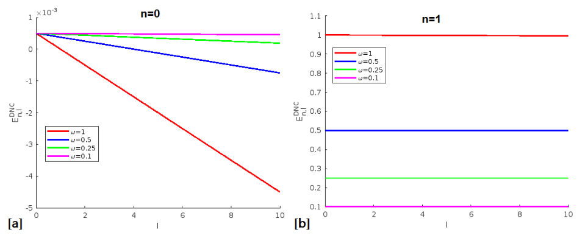
<figcaption class="paper-figure-caption"><b>Fig 4.</b> Figure 4: The DNC energy eigenvalues EDNC n,l as a function of the quantum number l, shown for different</figcaption>
</figure>
<figure class="paper-figure-card">
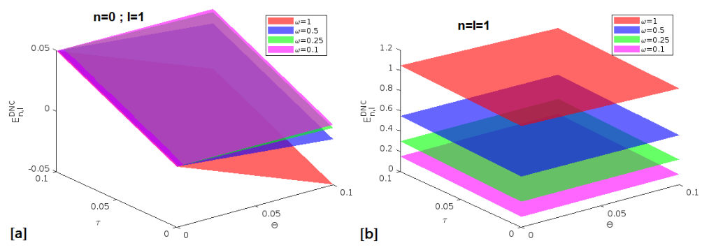
<figcaption class="paper-figure-caption"><b>Fig 5.</b> Figure 5: 3D plots of the NC energy eigenvalues ENC n,l as a function of NC and DNC parameters Θ and τ,</figcaption>
</figure>
</div>

<p><strong>Summary.</strong> This paper analyzes the thermal physics of a 2D Schrödinger oscillator placed within a Dynamical Noncommutative space. Using perturbation theory and the partition function, the authors derive how noncommutative parameters ($\Theta$ and $  au$) modify the energy spectrum and thermodynamic quantities like internal energy and specific heat. The work is significant for linking advanced geometric concepts in quantum mechanics to observable thermal signatures.</p>
<p><strong>Why it may be interesting.</strong> It connects fundamental concepts from quantum gravity (noncommutative geometry) directly to measurable thermal properties, providing a theoretical framework for how spacetime structure might influence thermodynamics in extreme physical regimes.</p>
<details>
<summary>Detailed structure</summary>
<p><strong>Main problem.</strong> The study investigates the thermal properties of a two-dimensional Schrödinger oscillator when subjected to the constraints of a Dynamical Noncommutative (DNC) space.</p>
<p><strong>Main result.</strong> The energy spectrum and thermodynamic quantities are modified by both the noncommutativity ($\Theta$) and the dynamical deformation parameter ($   au$), suggesting that DNC geometry encodes effective geometric properties.</p>
<p><strong>Method.</strong> The analysis employs perturbation theory to calculate energy eigenvalues and utilizes the partition function ($Z$) to derive key thermodynamic observables like internal energy, specific heat, and entropy.</p>
<p><strong>Model / system.</strong> The system is a 2D Schrödinger oscillator whose Hamiltonian is modified by position-dependent commutation relations characteristic of a DNC space. The analysis involves mapping this complex noncommutative problem onto an effective commutative counterpart using the Bopp-shift.</p>
<p><strong>Key observables.</strong> Partition function ($Z$), Free energy ($F$), Internal energy ($U$), Specific heat capacity ($C$), and Entropy ($S$).</p>
<p><strong>Important parameters / regimes.</strong> DNC parameter ($    au$), Noncommutative parameter ($\Theta$), Inverse temperature ($eta$), and quantum frequency ($\omega$).</p>
<p><strong>Assumptions / limitations.</strong> The analysis relies on perturbation theory expansions in $   au$ and $\Theta$, and the necessity of using a Dyson map to restore Hermiticity to non-Hermitian operators.</p>
<p><strong>Figures summary.</strong> Figures illustrate how thermodynamic quantities ($Z, F, U$) vary with temperature ($eta$), frequency ($\omega$), and the deformation parameters ($\Theta, 	au$).</p>
<p><strong>Paper structure.</strong> The paper proceeds by deriving the modified Hamiltonian in DNC space, calculating first-order corrections to the energy spectrum using perturbation theory, and finally analyzing the resulting thermodynamic behavior across various temperature regimes.</p>
</details>
<details>
<summary>Abstract</summary>
<p>In this paper, we study the two-dimensional Schrodinger oscillator within a dynamical noncommutative (DNC) space. By leveraging perturbation theory, we derive the energy eigenvalues and eigenvectors and systematically analyze the effects of both dynamical and non-dynamical noncommutative settings. First-order corrections to the eigensystem are obtained, revealing that the energy shift explicitly depends on the DNC parameter tau. Furthermore, we explore the thermal properties of the system by employing the partition function. Numerical results are presented to provide a comprehensive analysis of the system behavior under the considered effects. Notably, in the DNC framework, the commutation relations and the deformation parameter are position-dependent. Using the two-dimensional Bopp-shift, we effectively map the noncommutative problem to its commutative counterpart.</p>
</details>
<p><sub><a href="#top">↑ back to top</a></sub></p>

<p><a id="paper-2607.04863"></a></p>
<h3 id="uniform-distributions-in-nonuniform-systems-wall-potentials-generating-constant-density-profiles-in-classical-density-functional-theory"><a href="http://arxiv.org/abs/2607.04863v1">Uniform distributions in nonuniform systems: Wall potentials generating constant density profiles in classical density functional theory</a></h3>
<p><strong>Authors:</strong> Jiří Janek, Alexandr Malijevský<br>
<strong>Type:</strong> theory · <strong>Category:</strong> statistical mechanics · <strong>PDF:</strong> <a href="https://arxiv.org/pdf/2607.04863v1">https://arxiv.org/pdf/2607.04863v1</a><br>
<strong>Analysis basis:</strong> full PDF text, analyzed in chunks
<strong>Topic relevance:</strong> <code>Frenkel-Kontorova</code> <strong>1/5</strong> · <code>Keldysh / 2PI / non-Gaussian methods</code> <strong>1/5</strong></p>
<div class="figure-strip-hint">↔ Scroll figures horizontally</div>
<div class="paper-figures-scroll">
<figure class="paper-figure-card">

<figcaption class="paper-figure-caption"><b>Fig 1.</b> FIG. 1. Planar wall potential that generates the prescribed constant density profile for several packing fractions η. (a) Hard-sphere fluid. (b) Fluid with attractive interactions for T = 1.5 k−1 B ε.</figcaption>
</figure>
<figure class="paper-figure-card">
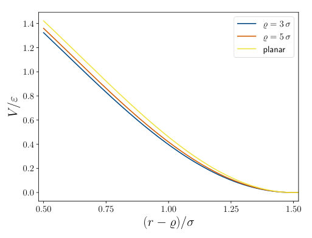
<figcaption class="paper-figure-caption"><b>Fig 2.</b> FIG. 3. Hard-sphere wall potential in spherical geometry, V sph. HS (r −ϱ), for η = 0.2. Results for two sphere radii are compared with the planar limit V pl. HS (z). The effect of curva- ture is relatively weak in the purely repulsive system.</figcaption>
</figure>
<figure class="paper-figure-card">
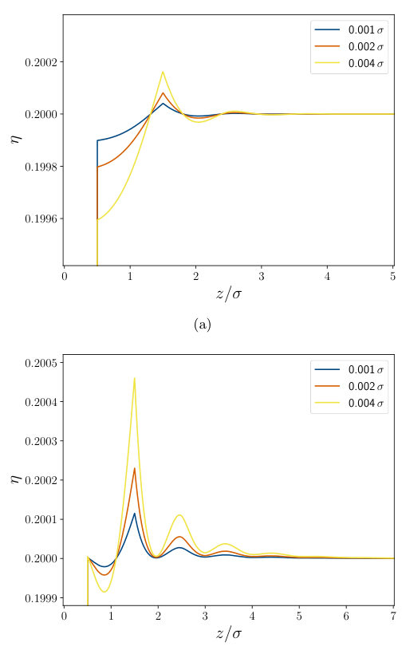
<figcaption class="paper-figure-caption"><b>Fig 3.</b> FIG. 2. DFT density profiles in planar geometry obtained with the analytically constructed external potentials. (a) Hard-sphere fluid. (b) Fluid with truncated Lennard-Jones attraction at T = 1.5 ε/kB. Several grid spacings are shown, demonstrating convergence toward the prescribed flat profile.</figcaption>
</figure>
<figure class="paper-figure-card">
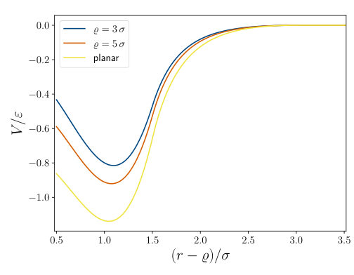
<figcaption class="paper-figure-caption"><b>Fig 4.</b> FIG. 4. Wall potential in spherical geometry for the fluid with attractive interactions, V sph. LJ (r −ϱ), shown for several sphere radii and compared with the planar result. For η = 0.2 and T = 1.5 k−1 B ε. In contrast to the hard-sphere case, curvature has a more pronounced effect on the depth and position of the attractive minimum.</figcaption>
</figure>
<figure class="paper-figure-card">

<figcaption class="paper-figure-caption"><b>Fig 5.</b> FIG. 5. DFT density profiles in spherical geometry for ηb = 0.2, ϱ = 3σ, and T = 1.5 k−1 B ε, using the derived external potentials. (a) Hard-sphere fluid. (b) Fluid with attractive interactions. Several grid spacings are shown, demonstrating convergence toward the prescribed flat profile.</figcaption>
</figure>
</div>

<p><strong>Summary.</strong> This work solves an inverse problem in DFT by calculating the specific wall potential needed to maintain a perfectly constant fluid density near a surface. Using fundamental measure theory, the authors derive analytical solutions for planar and spherical geometries, providing explicit microscopic realizations of structure-cancelling fields. This is significant for understanding boundary conditions in inhomogeneous fluids.</p>
<p><strong>Why it may be interesting.</strong> While focused on classical fluids, the rigorous application of density functional theory and the concept of 'structure-cancelling' fields provide powerful mathematical tools for understanding boundary effects in complex many-body systems, which has parallels in quantum confinement studies.</p>
<details>
<summary>Detailed structure</summary>
<p><strong>Main problem.</strong> The paper tackles the inverse problem of classical Density Functional Theory (DFT): determining the external wall potential required to force a fluid's density profile into a constant, flat distribution near a substrate.</p>
<p><strong>Main result.</strong> Explicit analytical expressions for structure-cancelling wall potentials are derived for planar and spherical geometries, confirming that such fields can enforce perfectly uniform local densities.</p>
<p><strong>Method.</strong> The authors use fundamental measure theory (FMT) within the DFT framework to solve the self-consistent equations governing inhomogeneous fluids in various symmetries.</p>
<p><strong>Model / system.</strong> The system is a one-component fluid modeled using hard-sphere interactions and optionally supplemented with mean-field attractive Lennard-Jones tails. Calculations are performed for planar, spherical, and cylindrical geometries.</p>
<p><strong>Key observables.</strong> Constant equilibrium density profile ($
ho(r) =     ext{constant}$), the required wall potential $V(r)$, weighted densities ($n_\alpha$), and one-body direct correlation functions ($c^{(1)}$).</p>
<p><strong>Important parameters / regimes.</strong> The geometry (planar, spherical, cylindrical), the nature of interaction (hard-sphere vs. attractive), and the bulk chemical potential ($\mu$).</p>
<p><strong>Assumptions / limitations.</strong> The fluid is treated as one-component; the attractive interactions are approximated using a mean-field treatment.</p>
<p><strong>Figures summary.</strong> Figures illustrate the derived wall potentials in planar and spherical geometries, alongside DFT calculations confirming that the resulting density profiles converge to the prescribed flat profile.</p>
<p><strong>Paper structure.</strong> The paper systematically derives weighted densities and correlation functions for three symmetries (planar, spherical, cylindrical) before focusing on solving the inverse problem—finding $V(r)$ such that $
ho(r)$ is constant. The results are validated by independent DFT calculations.</p>
</details>
<details>
<summary>Abstract</summary>
<p>We study the inverse problem of classical density functional theory for inhomogeneous fluids: finding the wall potential that produces a constant equilibrium density profile, i.e., a perfectly flat density distribution in the accessible region adjacent to a substrate. Within Rosenfeld's fundamental measure theory, we solve this problem for a one-component fluid in planar, spherical, and cylindrical geometries, considering both a hard-sphere fluid and a fluid with an additional truncated Lennard-Jones attraction treated at the mean-field level. Explicit analytical expressions are obtained for planar walls, while spherical walls also admit an analytical treatment in a more cumbersome form. The cylindrical case is treated numerically. The construction provides an explicit microscopic realization of structure-cancelling wall fields, related to flat-profile conditions that occur under special matching conditions in interfacial theories of wetting and drying. The theory also yields a compact collection of formulae for weighted densities and one-body direct correlation functions in the three fundamental geometries, providing useful reference expressions for density-functional implementations. The resulting analytic wall potentials are validated in independent density functional calculations, which confirm that the prescribed flat profiles are recovered within numerical accuracy.</p>
</details>
<p><sub><a href="#top">↑ back to top</a></sub></p>

<p><a id="paper-2607.05308"></a></p>
<h3 id="a-universal-emulator-for-planar-ising-lattices"><a href="http://arxiv.org/abs/2607.05308v1">A universal emulator for planar Ising lattices</a></h3>
<p><strong>Authors:</strong> Riccardo Ben Alì Zinati, Alessandro Codello<br>
<strong>Type:</strong> theory · <strong>Category:</strong> statistical mechanics · <strong>PDF:</strong> <a href="https://arxiv.org/pdf/2607.05308v1">https://arxiv.org/pdf/2607.05308v1</a><br>
<strong>Analysis basis:</strong> full PDF text, analyzed in chunks
<strong>Topic relevance:</strong> <code>analog quantum simulation</code> <strong>1/5</strong></p>
<div class="figure-strip-hint">↔ Scroll figures horizontally</div>
<div class="paper-figures-scroll">
<figure class="paper-figure-card">
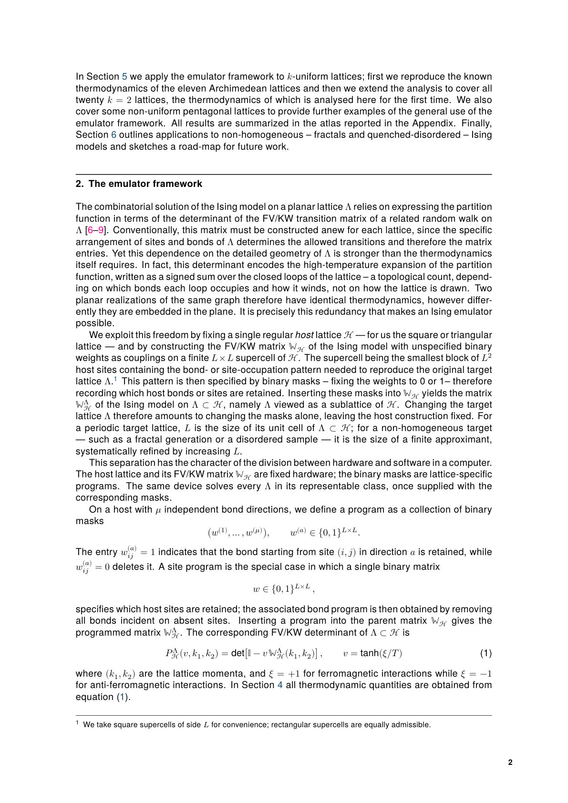
<figcaption class="paper-figure-caption"><b>Fig 1.</b> Low-resolution page preview, page 2</figcaption>
</figure>
<figure class="paper-figure-card">
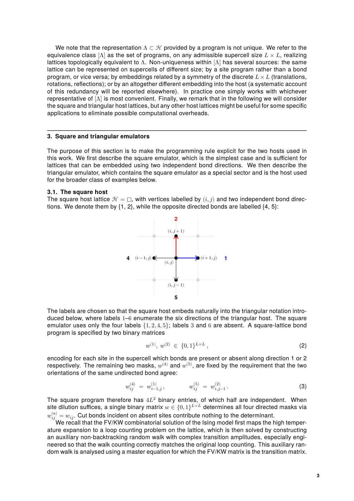
<figcaption class="paper-figure-caption"><b>Fig 2.</b> Low-resolution page preview, page 3</figcaption>
</figure>
<figure class="paper-figure-card">
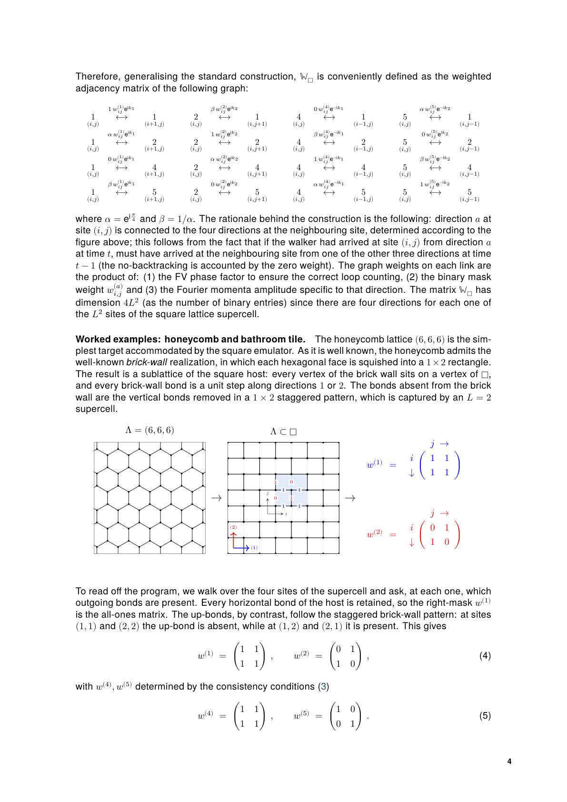
<figcaption class="paper-figure-caption"><b>Fig 3.</b> Low-resolution page preview, page 4</figcaption>
</figure>
<figure class="paper-figure-card">
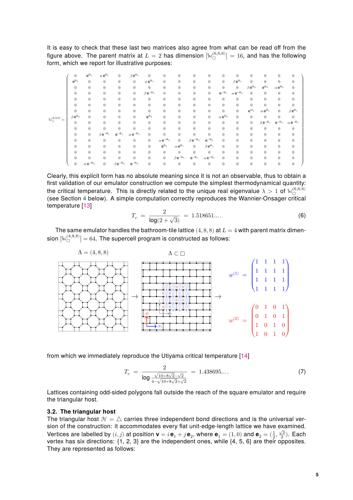
<figcaption class="paper-figure-caption"><b>Fig 4.</b> Low-resolution page preview, page 5</figcaption>
</figure>
<figure class="paper-figure-card">

<figcaption class="paper-figure-caption"><b>Fig 5.</b> Low-resolution page preview, page 6</figcaption>
</figure>
</div>

<p><strong>Summary.</strong> This paper introduces a universal emulator framework to calculate the thermodynamics of Ising models on any planar lattice. By embedding complex target lattices into a fixed, simple host lattice structure, the authors derive all necessary thermodynamic quantities using a single mathematical machinery based on the Feynman–Vdovichenko/Kac–Ward solution. This greatly expands the scope of solvable models in 2D statistical mechanics.</p>
<p><strong>Why it may be interesting.</strong> While focused on classical statistical mechanics, the concept of using a fixed 'hardware' structure (the host matrix) parameterized by 'software' masks (binary occupation patterns) is analogous to modern computational modeling techniques used in quantum simulation or circuit design.</p>
<details>
<summary>Detailed structure</summary>
<p><strong>Main problem.</strong> The primary goal is to develop a universal computational framework (an 'emulator') for calculating the thermodynamic properties of two-dimensional Ising models on arbitrary planar lattices.</p>
<p><strong>Main result.</strong> The authors successfully demonstrate that this single construction, based on embedding any target lattice into a host lattice, can calculate observables for all Archimedean and many other complex planar geometries.</p>
<p><strong>Method.</strong> The method utilizes the Feynman–Vdovichenko/Kac–Ward (FV/KW) solution, representing the partition function via a determinant involving a transition matrix derived from the lattice's connectivity masks.</p>
<p><strong>Model / system.</strong> The system is the 2D Ising model ($\pm J$) defined on various planar lattices ($\Lambda$). These target lattices are computationally realized by embedding them as site- or bond-diluted supercells within a fixed host lattice (e.g., square or triangular).</p>
<p><strong>Key observables.</strong> Free energy, internal energy, specific heat capacity, critical temperatures ($T_c$), and entropy for both ferromagnetic and antiferromagnetic couplings.</p>
<p><strong>Important parameters / regimes.</strong> The coupling constants ($\xi = \pm 1$), temperature ($T$), and the lattice momenta $(k_1, k_2)$ used in the momentum integral are crucial parameters.</p>
<p><strong>Assumptions / limitations.</strong> The core assumption is that the thermodynamics depends only on the topology of the target lattice $[\Lambda]$, allowing a single host-based machinery to calculate results for diverse geometries.</p>
<p><strong>Figures summary.</strong> The notes indicate extensive tables summarizing calculated thermodynamic properties (Free energy, Entropy, Energy per spin, Specific heat) across numerous simulated lattices and varying temperature regimes.</p>
<p><strong>Paper structure.</strong> The paper introduces the general emulator concept using a fixed host matrix ($\mathbf{W}_{\mathcal{H}}$), details its application to specific hosts (square/triangular), and then systematically applies this framework to calculate observables for large sets of known and novel planar lattices, culminating in comparative tables.</p>
</details>
<details>
<summary>Abstract</summary>
<p>We introduce the notion of an Ising emulator for two-dimensional Ising models: flat, unit-edge-length lattices can be represented as site- or bond-diluted supercells of a single host lattice, for which the Feynman--Vdovichenko/Kac--Ward solution is fixed once and for all. We construct explicit square and triangular emulators and show that a single transition matrix, supplemented by lattice-specific binary masks, gives all the thermodynamic quantities of interest for both ferro- and antiferromagnetic couplings. We apply the framework to all eleven Archimedean lattices, to all twenty $2$-uniform lattices -- whose thermodynamics is obtained here for the first time -- and to several pentagonal lattices, and show that the same construction extends directly to fractal and disordered Ising models, with no modification to the underlying machinery.</p>
</details>
<p><sub><a href="#top">↑ back to top</a></sub></p>

<p><a id="paper-2607.04072"></a></p>
<h3 id="benchmarking-api-drift-in-llm-generated-quantum-code-across-successive-sdk-versions"><a href="http://arxiv.org/abs/2607.04072v1">Benchmarking API Drift in LLM-Generated Quantum Code Across Successive SDK Versions</a></h3>
<p><strong>Authors:</strong> Mohammad Arif Rasyidi, Syahirul Faiz<br>
<strong>Type:</strong> theory · <strong>Category:</strong> other · <strong>PDF:</strong> <a href="https://arxiv.org/pdf/2607.04072v1">https://arxiv.org/pdf/2607.04072v1</a><br>
<strong>Analysis basis:</strong> full PDF text, analyzed in chunks
<strong>Topic relevance:</strong> <code>QC/QI experiment</code> <strong>1/5</strong></p>
<div class="figure-strip-hint">↔ Scroll figures horizontally</div>
<div class="paper-figures-scroll">
<figure class="paper-figure-card">
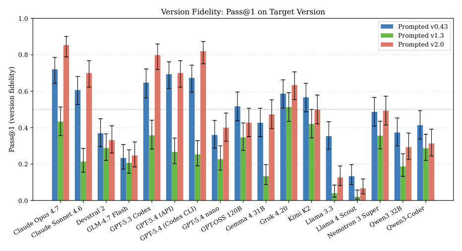
<figcaption class="paper-figure-caption"><b>Fig 1.</b> Figure 1: Version fidelity (Pass@1 on the target version, i.e., diagonal of the drift matrix) for all models and all three Qiskit versions. Error bars show 95% Wilson confidence intervals. The v1.3 column is consistently the weakest across models.</figcaption>
</figure>
<figure class="paper-figure-card">
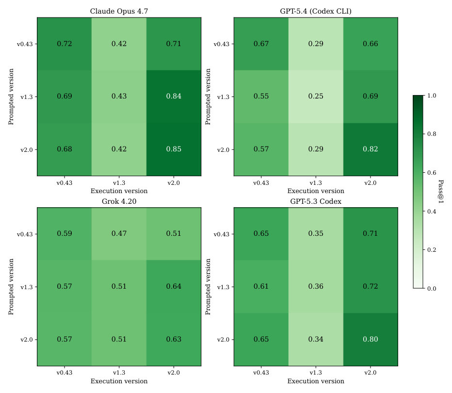
<figcaption class="paper-figure-caption"><b>Fig 2.</b> Figure 2: Drift matrices (Pass@1) for the four strongest models. Rows denote the prompted Qiskit version; columns denote the execution environment. The diagonal represents version fidelity. Low values in the middle column (v1.3) are a consistent finding across models.</figcaption>
</figure>
<figure class="paper-figure-card">

<figcaption class="paper-figure-caption"><b>Fig 3.</b> Figure 3: Forward compatibility drop: reduction in Pass@1 when code is executed in a newer version than its target. Positive values indicate degradation; negative values indicate the code runs better in the newer version (a sign the model ignores version anchors and generates modern code regardless).</figcaption>
</figure>
<figure class="paper-figure-card">

<figcaption class="paper-figure-caption"><b>Fig 4.</b> Figure 4 shows two broad failure regimes. Lower-fidelity models are dominated by ImportError, which points to broken module or symbol references. Higher-fidelity models shift toward DeprecationWarning, which suggests that the code structure is often correct but tied to older interfaces. Grok 4.20 sits between these two regimes. Table 3 reports raw error counts for the five most frequent error types per model, providing absolute scale alongside the normalized view.</figcaption>
</figure>
<figure class="paper-figure-card">

<figcaption class="paper-figure-caption"><b>Fig 5.</b> Figure 4: Normalized error taxonomy across models. Weaker models are dominated by ImportError, indicating structural module confusion. Stronger models shift toward DeprecationWarning, suggesting version-lagged but structurally correct code. Error types shown are those with the highest aggregate frequency.</figcaption>
</figure>
</div>

<p><strong>Summary.</strong> This paper benchmarks 'API drift' in LLMs generating quantum code using Qiskit across multiple SDK versions (v0.43 to v2.0). The authors developed a comprehensive benchmark measuring version fidelity, cross-compatibility, and repair success rates. They conclude that while LLMs can generate plausible code, ensuring the generated code adheres precisely to the required SDK version remains a significant, structured challenge.</p>
<p><strong>Why it may be interesting.</strong> While not focused on fundamental physics, this work is highly relevant to quantum information science infrastructure. It quantifies the reliability gap between theoretical LLM capability and practical, version-locked implementation required for building real quantum algorithms.</p>
<details>
<summary>Detailed structure</summary>
<p><strong>Main problem.</strong> The core problem is 'API drift,' which describes the failure of Large Language Models (LLMs) to generate quantum code that reliably targets a specific, requested Software Development Kit (SDK) version.</p>
<p><strong>Main result.</strong> Version alignment is shown to be a distinct and significant challenge in LLM-generated quantum code; while stronger models exhibit better performance, API drift remains only partly recoverable even with documentation guidance.</p>
<p><strong>Method.</strong> The authors introduce the 'quantum-api-drift' benchmark, evaluating 17 different LLMs across 50 tasks using three successive versions of Qiskit (v0.43, v1.3, and v2.0).</p>
<p><strong>Model / system.</strong> The system under study is quantum computing code generation, specifically utilizing the Qiskit SDK. The evaluation compares performance across multiple historical and modern versions of this software platform.</p>
<p><strong>Key observables.</strong> Diagonal Pass@1 rates (version fidelity), cross-version compatibility matrices, failure mode taxonomies (e.g., broken imports vs. deprecation warnings), and documentation-guided repair success rates.</p>
<p><strong>Important parameters / regimes.</strong> The three key SDK versions tested are v0.43, v1.3, and v2.0; the evaluation is constrained by a 1024-token output cap in the REST API setting.</p>
<p><strong>Assumptions / limitations.</strong> The benchmark relies on test harnesses rewritten to be SDK-version-agnostic, meaning semantic correctness cannot always be guaranteed solely from execution success. The comparison between API and CLI deployments is noted as non-directly comparable.</p>
<p><strong>Figures summary.</strong> Figures include drift heatmaps showing Pass@1 values across the $3 	imes 3$ version matrix, and tables summarizing diagonal fidelity (version alignment) and repair effectiveness for various models.</p>
<p><strong>Paper structure.</strong> The paper introduces the benchmark, details the methodology using Qiskit versions, presents results comparing model performance across different drift metrics (fidelity, compatibility, repair), and concludes by establishing version alignment as a necessary evaluation axis.</p>
</details>
<details>
<summary>Abstract</summary>
<p>Large language models can generate plausible quantum code, but it is unclear whether they can reliably target the specific software development kit (SDK) version requested by the user. We study this problem as API drift and introduce quantum-api-drift, a benchmark for measuring version fidelity, defined here as execution success on the requested SDK version, cross-version compatibility, failure modes, and documentation-guided repair in LLM-generated quantum SDK code. We instantiate the benchmark with Qiskit, a representative quantum SDK that underwent substantial interface changes across v0.43, v1.3, and v2.0. We evaluate 17 models on 50 tasks with 3 samples per prompt, yielding 450 generated samples and 1,350 executions per model. Sixteen models are tested in a matched REST API setting with a 1024-token output cap, while GPT-5.4 (Codex CLI) is reported separately as a reference configuration. Across the 16 matched REST models, diagonal Pass@1 ranges from 0.02 to 0.85. Claude Opus 4.7 is strongest on v0.43 and v2.0, while Grok 4.20 is strongest on v1.3 at 0.513. Error profiles differ systematically by model strength: weaker models fail mainly with broken imports, while stronger models more often reach deprecation-level failures. Documentation-guided repair succeeds for 0.19 to 0.59 of repair attempts overall and is consistently much more effective for migration to v2.0 than to v1.3. The benchmark artifacts are publicly available at https://github.com/arasyi/quantum-api-drift. These results show that version alignment is a distinct evaluation axis for quantum code generation and that API drift remains only partly recoverable even with migration guidance.</p>
</details>
<p><sub><a href="#top">↑ back to top</a></sub></p>

<p><a id="paper-2607.04598"></a></p>
<h3 id="breaking-the-one-dimensional-expressibility-trainability-tradeoff"><a href="http://arxiv.org/abs/2607.04598v1">Breaking the One-Dimensional Expressibility-Trainability Tradeoff</a></h3>
<p><strong>Authors:</strong> Kyoungho Cho, Yu-Seong Jeon, Jinhyoung Lee, Jeongho Bang<br>
<strong>Type:</strong> theory · <strong>Category:</strong> quantum information and computing · <strong>PDF:</strong> <a href="https://arxiv.org/pdf/2607.04598v1">https://arxiv.org/pdf/2607.04598v1</a><br>
<strong>Analysis basis:</strong> full PDF text, analyzed in chunks
<strong>Topic relevance:</strong> <code>entanglement &amp; information structure</code> <strong>1/5</strong></p>
<div class="figure-strip-hint">↔ Scroll figures horizontally</div>
<div class="paper-figures-scroll">
<figure class="paper-figure-card">
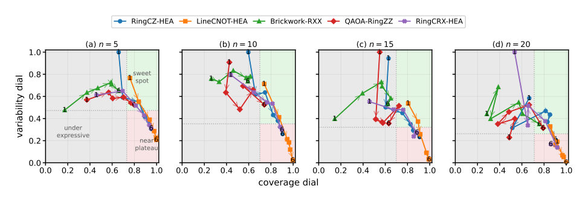
<figcaption class="paper-figure-caption"><b>Fig 1.</b> FIG. 1. Ansatz trajectories in the EP-EPD two-dial plane for n = 5, 10, 15, 20. Curves denote ansatz families; markers trace L = 1, . . . , 6, with labels at the first and final depths and arrows in the increasing-L direction. The axes are the coverage and variability dials in Eq. (17). Gray, green, and red mark the underexpressive, sweet-spot, and near-plateau regimes in Eq. (20), with thresholds fixed by Eq. (19).</figcaption>
</figure>
<figure class="paper-figure-card">

<figcaption class="paper-figure-caption"><b>Fig 2.</b> FIG. 2. Task-level validation on the n = 5 route plane. Points are ansatz-depth pairs, color is empirical success probability, and dashed lines are xc, yc. High coverage with low EPD is less favorable for training.</figcaption>
</figure>
<figure class="paper-figure-card">

<figcaption class="paper-figure-caption"><b>Fig 3.</b> FIG. 3. Region-wise diagnostics: success probability, first-success iteration (lower is faster), and initial SPSA gradient scale. The sweet region is the fastest high-coverage region and outperforms near- plateau in success probability.</figcaption>
</figure>
<figure class="paper-figure-card">

<figcaption class="paper-figure-caption"><b>Fig 4.</b> FIG. 4. Depth scan for the ring-CZ hardware-efficient ansatz. The four panels show the Sim-style coverage proxy, family-averaged EP, family- averaged EPD, and the input-induced variance of a representative gradient. The key feature is the mismatch between the early saturation of the coverage proxy and the later collapse of EPD and the gradient scale.</figcaption>
</figure>
<figure class="paper-figure-card">

<figcaption class="paper-figure-caption"><b>Fig 5.</b> FIG. 5. Normalized onset comparison for the n = 6 ring-CZ ansatz. The coverage proxy reaches a near-ceiling value at L = 2, while EPD and the representative gradient variance both pass their half-collapse thresholds at L = 4 in this finite-sample run.</figcaption>
</figure>
</div>

<p><strong>Summary.</strong> This work refutes the notion that expressibility and trainability are linked by a single tradeoff curve. By introducing Entangling Power (EP) and its deviation (EPD), the authors propose a two-dial design rule for PQCs. This framework guides researchers to select circuit depths that maximize quantum state coverage without prematurely activating barren plateau conditions, thus optimizing QML utility.</p>
<p><strong>Why it may be interesting.</strong> It provides a rigorous, multi-faceted diagnostic framework for designing quantum circuits, moving beyond simple metrics like circuit depth or parameter count to guide practical implementation in variational quantum algorithms.</p>
<details>
<summary>Detailed structure</summary>
<p><strong>Main problem.</strong> The paper challenges the assumption that expressibility (coverage) and trainability in Parameterized Quantum Circuits (PQCs) form a single, one-dimensional tradeoff.</p>
<p><strong>Main result.</strong> It establishes a two-dial design rule using Entangling Power (EP) and Entangling-Power Deviation (EPD), showing that high coverage can be achieved while retaining sufficient input-dependent variability for effective training.</p>
<p><strong>Method.</strong> The authors analyze the system using a moment hierarchy, defining global descriptors like EP and EPD alongside local diagnostics like gradient variance to separate these physical quantities.</p>
<p><strong>Model / system.</strong> The model involves Parameterized Quantum Circuits ($\hat{U}(	heta)$) acting on $n$ qubits, typically probed by product-input states ($\mu_{	ext{prod}}$), used in the context of Quantum Machine Learning (QML).</p>
<p><strong>Key observables.</strong> Expressibility/Coverage, Entangling Power (EP), Entangling-Power Deviation (EPD), and local Gradient Variance.</p>
<p><strong>Important parameters / regimes.</strong> Circuit depth ($L$), number of qubits ($n$), and the specific choice of cost observable ($\hat{O}$) defining the gradient light cone.</p>
<p><strong>Assumptions / limitations.</strong> The analysis relies on characterizing fixed-circuit quantities by averaging over product-input states, and it assumes that local gradient variance remains the ultimate criterion for trainability.</p>
<p><strong>Figures summary.</strong> Figures illustrate ansatz trajectories in an EP-EPD two-dial plane, distinguishing between underexpressive, 'sweet spot' (high coverage/open variability), and near-plateau regimes. Tables compare task performance metrics across these identified regions.</p>
<p><strong>Paper structure.</strong> The paper first introduces the moment hierarchy relating global descriptors ($ ext{EP} 
ightarrow   ext{EPD}$) and then develops a two-dial design protocol. This is validated by performing route scans and concluding with task-level benchmarking on a specific QML problem to confirm the utility of the 'sweet spot' region.</p>
</details>
<details>
<summary>Abstract</summary>
<p>Expressive parameterized quantum circuits (PQCs) are often designed under a dilemma: the growth of expressibility and entangling power (EP) that improves Hilbert-space coverage is also expected to randomize an ansatz and activate barren-plateau (BP) conditions. We show that this dilemma is not a one-dimensional tradeoff. The usual picture collapses three inequivalent objects -- parameter-ensemble coverage, fixed-circuit entangling response, and local gradient moments -- into one scalar narrative. For a fixed circuit probed by Haar-product inputs, EP is a global two-copy mean of the output-entanglement distribution, whereas entangling-power deviation (EPD) is a global four-copy fluctuation descriptor. Gradient variance, however, is a local two-copy contraction selected by a parameter light cone and a cost observable. This moment hierarchy yields an analytic separation: equal EP need not imply equal trainability, as witnessed by equal-EP circuits with different EPDs and different gradient variances. These separations turn EP and EPD into a two-dial design rule for PQC ansatzes: EP measures how far the circuit has moved along the coverage dial, while EPD monitors whether input-dependent variability remains. We find that ansatz routes can reach high, Haar-like coverage before EPD and gradient variance collapse, showing that coverage and BP activation are distinct crossover events. The EP/EPD framework thus breaks the apparent one-dimensional expressibility-trainability tradeoff into a practical design rule: search for highly expressive PQCs in the window where coverage is high but BP-like homogenization has not yet erased trainable structure.</p>
</details>
<p><sub><a href="#top">↑ back to top</a></sub></p>
<hr>
<p>
<a href="index.html">← Index</a>
 · <a href="papers_05.html">← Previous</a> · <a href="papers_07.html">Next →</a>
</p>
<hr>

</body>
</html>
